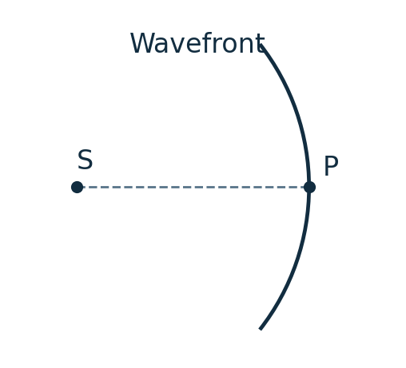
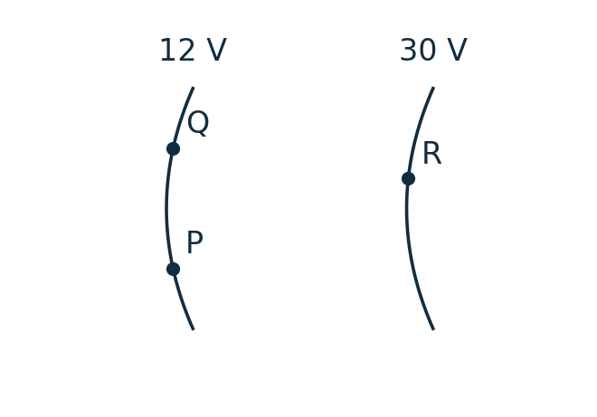
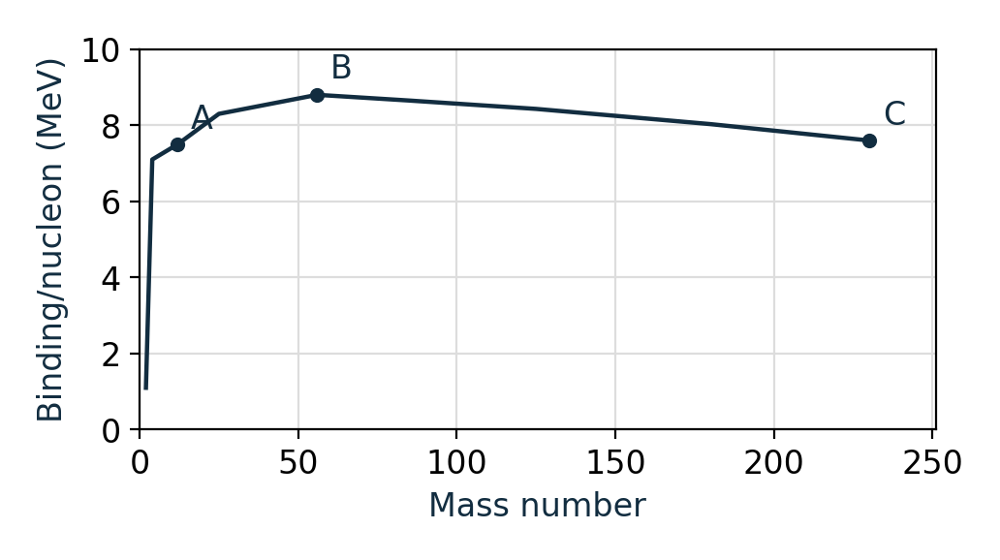
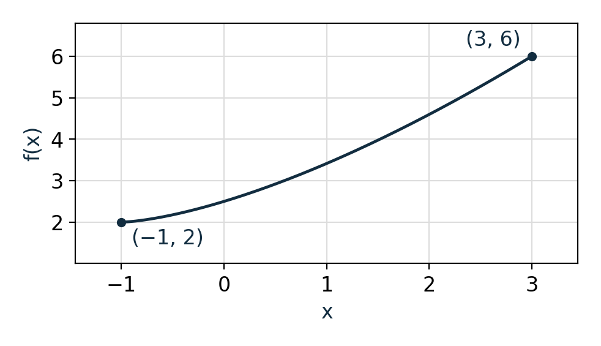

COMEDK UGET Test 19
180 minutes · 180 questions · +1 per correct answer · No negative marking
Physics
Q001. A real object is 12 cm from a concave mirror of focal-length magnitude 18 cm. How far behind the mirror is its virtual image?
A) 18 cm
B) 7.2 cm
C) 36 cm
D) 6 cm
Worked solution
Answer: (C) 36 cm
Why and working: With u=−12 cm and f=−18 cm, 1/v=−1/18+1/12=1/36. Positive v places the virtual image behind the mirror.
Why not the others: (A) uses the focal distance alone. (B) adds the reciprocal magnitudes. (D) subtracts distances without using the mirror equation.
Q002. An unloaded 4 m horizontal uniform beam of weight 80 N rests on supports at its ends. Where from the left end should a 40 N load be placed for the right support to carry 65 N?
A) 1.5 m
B) 3.5 m
C) 2.5 m
D) 3.0 m
Worked solution
Answer: (C) 2.5 m
Why and working: Torque about the left support gives 65×4=80×2+40x. Solving 260=160+40x gives x=2.5 m.
Why not the others: (A) uses distance from the right end. (B) does not make the torque balance. (D) would give right reaction 70 N.
Q003. In a uniform transparent medium, the wavefront shown has local radius of curvature centred at S. Which direction at P agrees with outward ray propagation?

A) Along the wavefront tangent at P
B) From P directly toward S
C) Along the line from S through P, away from S
D) Perpendicular to both the radius and the tangent in the drawing
Worked solution
Answer: (C) Along the line from S through P, away from S
Why and working: A ray is normal to its wavefront. For an outward spherical front its local normal points radially away from S.
Why not the others: (A) a tangent follows equal-phase points. (B) this is the inward normal. (D) the outward direction lies within the drawn plane.
Q004. An ideal photocell is illuminated at a frequency just below the threshold. Light intensity is increased while keeping frequency fixed and using the ordinary single-photon regime. Which result follows?
A) There is still no photoelectric emission
B) The stopping potential becomes positive and emission begins
C) Saturation current must become nonzero once enough photons arrive
D) Every electron comes out with the same finite kinetic energy
Worked solution
Answer: (A) There is still no photoelectric emission
Why and working: Each photon still carries hf below the work function. Greater intensity increases photon number without changing energy per photon.
Why not the others: (B) the required photon threshold was not crossed. (C) adding more subthreshold photons does not change individual energy. (D) no finite-energy photoelectrons are ejected here.
Q005. Two positive charges repel. An external agent slowly brings their separation from 2r to r with one charge held fixed. What happens to their electrostatic potential energy?
A) It decreases by kq₁q₂/(2r)
B) It increases by kq₁q₂/r
C) It remains fixed because the moving charge starts and stops at rest
D) It increases by kq₁q₂/(2r)
Worked solution
Answer: (D) It increases by kq₁q₂/(2r)
Why and working: Pair energy is kq₁q₂/d. The change is kq₁q₂(1/r−1/(2r))=kq₁q₂/(2r).
Why not the others: (A) reverses the endpoint subtraction. (B) gives final rather than change in energy. (C) quasistatic motion may do work without changing kinetic energy.
Q006. A thin foil scatters very few alpha particles through angles above 90°, though most are transmitted with small deviations. What geometric feature of a Rutherford atom is supported by the rarity of very large deflections?
A) The region capable of very strong repulsion occupies only a tiny fraction of the atom's cross section
B) Positive charge is spread uniformly across the full atom at nuclear density
C) The foil contains no positively charged constituents
D) Every alpha particle approaches the same closest distance from a nucleus
Worked solution
Answer: (A) The region capable of very strong repulsion occupies only a tiny fraction of the atom's cross section
Why and working: Only small impact parameters allow close encounters with the compact positive nucleus. Most incident paths miss this small region.
Why not the others: (B) a diffuse positive charge does not explain a compact strongly scattering region. (C) large positive repulsion needs such constituents. (D) different offsets yield different distances and angles.
Q007. In the approximation R=r₀A^(1/3), which property is roughly independent of mass number across nuclei?
A) Nuclear radius itself
B) Total nuclear volume
C) Neutron count exactly
D) Average nucleon number per unit nuclear volume
Worked solution
Answer: (D) Average nucleon number per unit nuclear volume
Why and working: Volume scales as R³ and therefore as A. Dividing the number A of nucleons by that volume gives an approximately constant density.
Why not the others: (A) changes with A^(1/3). (B) changes approximately linearly with A. (C) varies among nuclei.
Q008. Two identical springs store energies U and 9U. How do their extension magnitudes compare?
A) The second is nine times the first
B) The second is one third of the first
C) The second is three times the first
D) The extensions must be equal
Worked solution
Answer: (C) The second is three times the first
Why and working: At fixed spring constant energy scales as extension squared. Taking the square root of nine gives three.
Why not the others: (A) uses energy ratio directly. (B) inverts the square-root ratio. (D) the stored energies differ.
Q009. An insulator and a semiconductor both have filled valence bands at very low temperature. Why can modest heating improve conduction in the semiconductor far more readily?
A) Its valence band contains no electrons to promote
B) Heating removes every electron from the insulator's nucleus
C) Both have the same gap and thus always the same carrier density
D) Its smaller gap allows more thermally promoted carriers and holes
Worked solution
Answer: (D) Its smaller gap allows more thermally promoted carriers and holes
Why and working: Thermal excitation can move electrons across the smaller gap more readily. The electrons and resulting holes can carry current.
Why not the others: (A) the initial valence bands are filled. (B) ordinary heating does not strip all electrons. (C) the gap difference is what controls excitation here.
Q010. Equal positive charges at (0,a) and (0,−a) act on a positive test charge at (a,0). What is the direction of the net force?
A) Along +x
B) Along −x
C) Along +y
D) Zero
Worked solution
Answer: (A) Along +x
Why and working: Both forces repel toward the right. Their vertical components are equal and opposite, so only positive horizontal components remain.
Why not the others: (B) would require attraction or sources to the right. (C) vertical components cancel. (D) horizontal components add.
Q011. For a given liquid and flow speed in a straight pipe, what design change reduces the Reynolds number?
A) Use a larger pipe diameter
B) Double the pipe diameter
C) Keep the diameter while making the pipe twice as long
D) Use a smaller pipe diameter
Worked solution
Answer: (D) Use a smaller pipe diameter
Why and working: For internal flow Re=ρvD/η. At fixed fluid and speed, decreasing D lowers Re.
Why not the others: (A) increases the characteristic length. (B) doubles Re instead of reducing it. (C) total length is not the characteristic diameter.
Q012. An electric dipole has charges +q at x=+a and −q at x=−a. At x=2a an additional point source at distance a is used to cancel the dipole potential. What charge must that source have?
A) +2q/3
B) −q
C) −2q/3
D) +q/3
Worked solution
Answer: (C) −2q/3
Why and working: The dipole gives kq/a−kq/(3a)=2kq/(3a). The added charge at distance a must contribute its negative, so its value is −2q/3.
Why not the others: (A) would add to the positive potential. (B) would give too large a negative contribution. (D) has the wrong sign and magnitude.
Q013. A given wire carries the same current after a change in material that doubles carrier density and halves mobility. What happened to the required electric field if geometry stays fixed?
A) It is unchanged
B) It doubles
C) It halves
D) It quadruples
Worked solution
Answer: (A) It is unchanged
Why and working: The current is neAμE. The product nμ stays fixed under the compensating changes, so the same E gives the same I.
Why not the others: (B) uses only mobility change. (C) uses only density change. (D) both changes do not multiply in the same direction.
Q014. A 100 g piece of ice at 0°C partly melts when it receives 10 kJ. Use latent heat of fusion 334 kJ/kg. Approximately how much ice melts?
A) 100 g
B) 3 g
C) 30 g
D) 0.03 g
Worked solution
Answer: (C) 30 g
Why and working: During coexistence heat goes into phase change. The melted mass is 10/334 kg, about 0.030 kg or 30 g.
Why not the others: (A) would require about 33.4 kJ. (B) misplaces one power of ten. (D) uses kilogram numerical value as grams.
Q015. At the common centre of two concentric coplanar loops, each of radius R and each carrying I, what field results if one is reversed from an originally aiding arrangement?
A) The original aiding field
B) Half the original aiding field
C) Twice the original aiding field
D) Zero
Worked solution
Answer: (D) Zero
Why and working: Equal current and radius give equal central field magnitudes. Reversal gives opposite directions, so they cancel.
Why not the others: (A) describes the pre-reversal sum. (B) mistakes opposing equal fields for a single remaining loop. (C) opposition reduces the net field.
Q016. A short magnet points along +x. Place P at distance 2r on its positive axial line and Q at distance r on its equatorial line. What is the magnitude ratio B_P/B_Q in the dipole approximation?
A) 2
B) 1/4
C) 1/8
D) 4
Worked solution
Answer: (B) 1/4
Why and working: The axial field carries a factor two relative to equatorial at the same distance. At double distance the inverse-cube factor is 1/8, so the ratio is 2/8.
Why not the others: (A) compares only the angular factors. (C) omits the axial factor. (D) inverts the final ratio.
Q017. Why can an ideal gas cool during a rapid thermally isolated expansion that does positive work on a piston?
A) Adiabatic expansion always adds heat to the gas
B) Work leaves the gas without compensating heat input, lowering its internal energy
C) Its temperature is determined solely by its molecular mass
D) Energy must remain internal whenever no heat crosses the boundary
Worked solution
Answer: (B) Work leaves the gas without compensating heat input, lowering its internal energy
Why and working: With Q=0 and positive work by the gas, ΔU=−W. For the ideal gas a drop in U corresponds to a temperature drop.
Why not the others: (A) thermal isolation excludes heat input. (C) temperature can change at fixed molecular mass. (D) work can cross the boundary.
Q018. A coil with 50 turns has its flux per turn increase by 0.004 Wb in 0.10 s. What average induced emf magnitude results?
A) 0.04 V
B) 0.20 V
C) 20 V
D) 2 V
Worked solution
Answer: (D) 2 V
Why and working: Total linkage changes by 50×0.004=0.20 Wb-turn. Divide by 0.10 s for average emf magnitude 2 V.
Why not the others: (A) gives one turn's emf. (B) gives the linkage change without dividing by time. (C) uses an incorrect time conversion.
Q019. A series AC circuit has R=12 Ω and impedance 20 Ω. What is the magnitude of its net reactance?
A) 8 Ω
B) 32 Ω
C) 16 Ω
D) 400 Ω
Worked solution
Answer: (C) 16 Ω
Why and working: The impedance magnitude obeys Z²=R²+X². Hence X magnitude is √(400−144)=16 Ω.
Why not the others: (A) subtracts magnitudes directly. (B) adds magnitudes linearly. (D) reports impedance squared with incorrect units.
Q020. Why is the ideal monatomic gas molar heat capacity at constant volume 3R/2 in the equipartition model?
A) Every molecule has two active rotational and three translational modes
B) Work at constant volume adds R to the energy increase
C) Each translation contributes a full RT per mole
D) Each molecule has three active translational quadratic degrees of freedom
Worked solution
Answer: (D) Each molecule has three active translational quadratic degrees of freedom
Why and working: Each active quadratic motion gives energy RT/2 per mole. Three translations therefore give U=3RT/2 and C_V=3R/2.
Why not the others: (A) monatomic particles have no such rotational thermal modes. (B) there is no pressure–volume work at fixed volume. (C) contribution per quadratic term is RT/2.
Q021. A plane electromagnetic wave travels along +x. At one point E is instantaneously along +y. Which direction of B produces that propagation?
A) +z
B) −z
C) +x
D) −y
Worked solution
Answer: (A) +z
Why and working: Energy flow is along E×B. With +y cross +z=+x the required magnetic field points +z.
Why not the others: (B) would reverse energy flow. (C) a longitudinal B is incompatible. (D) would give zero cross product.
Q022. At a glass–air boundary the incidence nonzero angle inside glass is smaller than the critical angle. What is true of the transmitted ray angle relative to incidence?
A) It is smaller and remains less than incidence
B) It is larger and remains less than 90°
C) It is exactly 90° for every such incidence
D) No transmitted ray exists for any nonzero incidence
Worked solution
Answer: (B) It is larger and remains less than 90°
Why and working: Snell's law gives n_glass sin i=n_air sin r. Since n_glass exceeds n_air and the angle is below critical, r is larger and still real and below 90° for nonzero incidence.
Why not the others: (A) would describe entry into a higher-index material. (C) grazing transmission occurs at the critical angle. (D) subcritical incidence permits transmission.
Q023. A small-amplitude pendulum is taken to a place where g has one quarter of its original value. How should length be changed to preserve period?
A) Use twice the original length
B) Use half the original length
C) Use four times the original length
D) Use one quarter of the original length
Worked solution
Answer: (D) Use one quarter of the original length
Why and working: Period depends on √(L/g). Both L and g must scale together to keep their ratio fixed.
Why not the others: (A) increases L/g rather than fixing it. (B) uses the period square root twice. (C) inverts the needed length factor.
Q024. A plane wavefront goes from a faster medium into a slower one at a nonzero incidence angle. Which wavefront construction leads to the ray bending toward the normal?
A) The refracted secondary wavelet grows a smaller radius during the same time than the incident advance in the faster medium
B) Both fronts cover the same distance regardless of wave speed
C) The refracted wavelet has a larger radius and its frequency doubles
D) No secondary wavelets can start at the interface
Worked solution
Answer: (A) The refracted secondary wavelet grows a smaller radius during the same time than the incident advance in the faster medium
Why and working: In equal times the distance vt is smaller in the slow medium. The common envelope then has its normal closer to the interface normal.
Why not the others: (B) distances depend on speed. (C) speed is smaller and frequency is continuous. (D) the interface points participate in the construction.
Q025. A metal has work function 2 eV. Two light sources emit photons of energies 3 eV and 5 eV, respectively. How much larger is the stopping-voltage magnitude for the second source?
A) 1 V
B) 2 V
C) 3 V
D) 5 V
Worked solution
Answer: (B) 2 V
Why and working: The corresponding maximum kinetic energies are 1 eV and 3 eV. Their difference is 2 eV, hence the stopping-voltage difference is 2 V.
Why not the others: (A) gives the first stopping voltage alone. (C) gives the second stopping voltage alone. (D) uses photon energy as stopping voltage without accounting for work function.
Q026. A vibrating string fixed at both ends shows five displacement nodes, including both ends. What harmonic is shown?
A) Fifth
B) Third
C) Fourth
D) Tenth
Worked solution
Answer: (C) Fourth
Why and working: Each adjacent pair of nodes bounds one loop of half a wavelength. Five nodes bound four loops and hence the fourth harmonic.
Why not the others: (A) uses nodes rather than intervals. (B) counts only the interior nodes. (D) doubles the node count.
Q027. For hydrogen in the Bohr model, which change in n increases the orbit's circumference by a factor of 9 while starting at n=2?
A) From n=2 to n=6
B) From n=2 to n=3
C) From n=2 to n=9
D) From n=2 to n=18
Worked solution
Answer: (A) From n=2 to n=6
Why and working: Circumference scales with radius and hence n². A factor of nine requires n to triple from two to six.
Why not the others: (B) would change the radius by only 9/4. (C) uses the circumference factor as the final quantum number. (D) multiplies n by nine instead of √9.
Q028. Products of a nuclear reaction have total rest mass lower by 0.003 u. Using 931 MeV per u, what net energy is released?
A) 0.2793 MeV
B) 3.103 MeV
C) 2793 MeV
D) 2.793 MeV
Worked solution
Answer: (D) 2.793 MeV
Why and working: The mass defect gives 0.003×931=2.793 MeV of released energy.
Why not the others: (A) misplaces a decimal. (B) uses the inverse conversion incorrectly. (C) treats 0.003 u as 3 u.
Q029. Position is x(t)=t³−6t²+9t in metres. At which positive times does the velocity vanish?
A) 1 s and 3 s
B) 0 s and 3 s
C) 2 s and 3 s
D) 1 s and 2 s
Worked solution
Answer: (A) 1 s and 3 s
Why and working: Differentiate to get v=3t²−12t+9=3(t−1)(t−3). Its positive roots are 1 and 3.
Why not the others: (B) zeros of position are not necessarily zeros of velocity. (C) two is where acceleration vanishes. (D) v(2) is nonzero.
Q030. An intrinsic silicon sample is lightly doped with an acceptor. Which difference from the intrinsic sample follows at the same temperature in the extrinsic regime?
A) Mobile holes outnumber mobile electrons
B) Mobile electrons outnumber holes
C) No holes occur after doping
D) The bulk has a large positive net charge throughout
Worked solution
Answer: (A) Mobile holes outnumber mobile electrons
Why and working: Acceptors capture electrons, leaving extra mobile holes. Their negatively charged dopant ions maintain approximate charge neutrality in the bulk.
Why not the others: (B) would describe donor doping. (C) holes are the majority carriers. (D) fixed ions compensate the excess holes.
Q031. A uniformly charged rod carries total charge Q and has length L. If only its central third is retained with the same local charge density, how much charge remains?
A) 2Q/3
B) Q/9
C) Q
D) Q/3
Worked solution
Answer: (D) Q/3
Why and working: With uniform density λ=Q/L, multiplying by retained length L/3 gives Q/3.
Why not the others: (A) gives the discarded charge. (B) squares a length fraction incorrectly. (C) removing segments removes their charge.
Q032. If a and b are perpendicular nonzero vectors, which comparison is correct?
A) Both products vanish
B) Their dot product vanishes and the cross-product magnitude is the product of their lengths
C) The dot product has magnitude equal to the length product and cross product vanishes
D) Both products have magnitude equal to the length product
Worked solution
Answer: (B) Their dot product vanishes and the cross-product magnitude is the product of their lengths
Why and working: At 90°, cosine is zero and sine is one. These are the angular factors in the two products, respectively.
Why not the others: (A) only the dot product vanishes. (C) describes parallel vectors instead. (D) the dot product factor is zero.
Q033. The equipotential diagram gives voltages at P, Q and R. Which move of a positive test charge requires positive quasistatic external work?

A) P to Q
B) R to P
C) Q to P
D) Q to R
Worked solution
Answer: (D) Q to R
Why and working: The diagram puts P and Q on one lower-voltage contour and R on a higher one. External work is ΔU=qΔV, positive for Q to R.
Why not the others: (A) stays on the same contour. (B) lowers potential energy. (C) stays on the same contour in reverse.
Q034. At I=1 A component X reads 3 V and at I=2 A it reads 5 V. What are its static resistance at 2 A and its average incremental resistance between the readings, respectively?
A) 2 Ω and 2.5 Ω
B) 5 Ω and 2 Ω
C) 2.5 Ω and 5 Ω
D) 2.5 Ω and 2 Ω
Worked solution
Answer: (D) 2.5 Ω and 2 Ω
Why and working: The static ratio is V/I=5/2. Incremental resistance over the interval is ΔV/ΔI=(5−3)/(2−1)=2.
Why not the others: (A) swaps the two definitions. (B) uses voltage without dividing by current. (C) uses final voltage instead of its change.
Q035. A hanging object is pulled right by 9 N and left by 4 N in addition to vertical forces that already balance. Which extra force would restore equilibrium?
A) 5 N right
B) 13 N left
C) 4 N right
D) 5 N left
Worked solution
Answer: (D) 5 N left
Why and working: The known horizontal net force is +9−4=+5 N. Adding −5 N makes the total vector zero.
Why not the others: (A) reinforces the net force. (B) adds the opposed magnitudes. (C) does not cancel the rightward resultant.
Q036. On the circular path shown around a long perpendicular wire, why can Ampère's circulation be written as B times the circumference?
A) The field is tangent along the path and has one magnitude at the fixed radius
B) The field is normal to every path element
C) The field is zero at all points on the path
D) The enclosed current must be zero whenever the path is circular
Worked solution
Answer: (A) The field is tangent along the path and has one magnitude at the fixed radius
Why and working: For a straight, long wire cylindrical symmetry gives constant magnitude at fixed radius. Its field lines are azimuthal, so the tangent components have constant signed value for a chosen sense.
Why not the others: (B) normal field would have zero line-integral contribution. (C) the wire's nonzero current gives a magnetic field. (D) a contour can enclose nonzero current.
Q037. A pivoted magnetic dipole is displaced by a small angle from stable alignment with a field. If the field is doubled at the same moment and angle, how does the restoring torque change?
A) Its magnitude doubles and it still points toward alignment
B) It becomes half as large and reverses
C) It remains fixed because the angle is small
D) It vanishes immediately
Worked solution
Answer: (A) Its magnitude doubles and it still points toward alignment
Why and working: Torque magnitude is mB sin θ at fixed angle. Reorienting toward lower energy remains favoured and doubling B doubles magnitude.
Why not the others: (B) inverts the field dependence and flips the sign. (C) small angle changes sine approximation, not dependence on B. (D) nonzero angle and field give a torque.
Q038. At the bottom of a vertical circle of radius R, a bead on the inner side of the track moves with speed √(3gR). What is the magnitude of its normal reaction?
A) 3mg
B) 4mg
C) 2mg
D) mg
Worked solution
Answer: (B) 4mg
Why and working: Radially inward is upward at the bottom. Thus N−mg=mv²/R=3mg, giving N=4mg.
Why not the others: (A) gives only the radial resultant. (C) subtracts the weight instead of adding it to the required resultant. (D) would give zero centripetal force.
Q039. A changing external field creates an induced magnetic field through a loop pointing into the page. If its clockwise current is caused solely by increasing flux magnitude, which direction is the external field?
A) Into the page
B) In the plane of the loop
C) Out of the page
D) It must alternate directions during the increase
Worked solution
Answer: (C) Out of the page
Why and working: A clockwise circulation produces inward induced flux. It opposes the stipulated increase of outward flux, so the external field is out of the page.
Why not the others: (A) this would be reinforced by the induced field. (B) a coplanar field would have zero flux. (D) steady change need not reverse direction.
Q040. At a nonzero drive frequency in a series LCR circuit, the inductor phasor has a greater magnitude than the capacitor phasor. What is the source voltage phase relative to current?
A) It lags the current
B) It leads the current
C) It is precisely 90° behind the current
D) It is in phase with the current
Worked solution
Answer: (B) It leads the current
Why and working: The net reactive voltage points along the inductor's leading direction because its magnitude is larger. Combining that component with the resistor voltage gives a net lead.
Why not the others: (A) would require a larger capacitive component. (C) the reactance is net inductive. (D) requires zero net reactance.
Q041. A flywheel initially rotates at 10 rad/s. Constant angular deceleration of magnitude 2 rad/s² acts until its speed is 4 rad/s. Through what angle does it turn during that time?
A) 3 rad
B) 21 rad
C) 30 rad
D) 42 rad
Worked solution
Answer: (B) 21 rad
Why and working: The change takes (10−4)/2=3 s. At constant acceleration the average speed is (10+4)/2=7 rad/s, giving 21 rad.
Why not the others: (A) gives time as if it were angle. (C) uses the initial speed throughout. (D) uses the sum instead of average.
Q042. Which electromagnetic band lies immediately beyond the long-wavelength end of visible light and is used in many remote controls?
A) Ultraviolet
B) Gamma rays
C) Infrared
D) X-rays
Worked solution
Answer: (C) Infrared
Why and working: Infrared lies beyond visible red and can carry short-range pulses to a detector.
Why not the others: (A) lies beyond violet toward shorter wavelengths. (B) has far shorter wavelengths. (D) also lies at shorter wavelengths than visible.
Q043. A fibre core has refractive index 1.50 and its present cladding has index 1.20. Which replacement would preserve total internal reflection for a core ray with sin i=0.90?
A) A cladding of index 1.30
B) A cladding of index 1.40
C) A cladding of index 1.50
D) A cladding of index 1.60
Worked solution
Answer: (A) A cladding of index 1.30
Why and working: The ray's tangential factor is 1.50×0.90=1.35. Total internal reflection requires the outside index to lie below that value, which only 1.30 does.
Why not the others: (B) 1.40 permits a transmitted angle. (C) matching indices removes the guiding interface. (D) the cladding would be optically denser.
Q044. Two hypothetical planets have equal surface radius. Planet B has four times planet A's mass. Compare their surface escape speeds.
A) B's is four times A's
B) B's is half A's
C) B's is twice A's
D) They are equal
Worked solution
Answer: (C) B's is twice A's
Why and working: Escape speed is √(2GM/R). At fixed R a fourfold mass multiplies speed by two.
Why not the others: (A) uses direct mass scaling. (B) inverts the square-root scaling. (D) mass remains in the gravitational energy condition.
Q045. Two stable waves have the same frequency. At P their path difference is one full wavelength, but their sources are out of phase by π. How do they interfere there for equal amplitudes?
A) Constructively, because the path difference alone is one wavelength
B) Destructively, because the total phase difference is equivalent to π
C) They are incoherent because they are initially out of phase
D) They become incoherent only at P
Worked solution
Answer: (B) Destructively, because the total phase difference is equivalent to π
Why and working: The path contributes 2π and the fixed source phase adds π. The total is equivalent to π and equal-amplitude contributions cancel.
Why not the others: (A) ignores the source phase. (C) a constant nonzero phase difference is coherent. (D) coherence is not lost by arriving at one point.
Q046. A narrow light pulse contains 10¹⁸ photons of energy 2 eV each. Using 1 eV=1.6×10⁻¹⁹ J, what total energy does it carry?
A) 0.16 J
B) 3.2 J
C) 0.32 J
D) 2 J
Worked solution
Answer: (C) 0.32 J
Why and working: Multiply the photon count by 2×1.6×10⁻¹⁹ J to obtain 0.32 J.
Why not the others: (A) omits the factor two in photon energy. (B) misplaces one power of ten. (D) retains the eV numerical factor without converting.
Q047. In a horizontal ideal-fluid pipe, speed rises from 2 m/s to 6 m/s. Which expression gives the pressure drop in terms of density ρ in SI units?
A) 8ρ
B) 32ρ
C) 16ρ
D) 4ρ
Worked solution
Answer: (C) 16ρ
Why and working: At equal elevation, p₁−p₂=(ρ/2)(v₂²−v₁²). The speed-square difference is 36−4=32, so divide by two.
Why not the others: (A) uses speed change rather than the specified difference of squares. (B) omits the one-half factor. (D) uses the linear speed difference alone.
Q048. In two hydrogen Bohr states the orbital speeds are v and v/3. How does the magnitude of the second state's total energy compare with the first's?
A) It is one third as large
B) It is three times as large
C) It is nine times as large
D) It is one ninth as large
Worked solution
Answer: (D) It is one ninth as large
Why and working: For the Coulomb circular Bohr orbit the bound-energy magnitude equals kinetic energy, proportional to speed squared. Squaring 1/3 gives 1/9.
Why not the others: (A) uses direct speed scaling. (B) inverts and omits the square. (C) inverts the square dependence.
Q049. The graph marks nuclei A, B and C with different nucleon counts and binding energies per nucleon. Which has the greatest approximate total binding energy?

A) B
B) A
C) C
D) They have equal total binding
Worked solution
Answer: (C) C
Why and working: Approximate total binding is the plotted binding per nucleon times mass number. Multiplying the plotted pairs gives roughly 12×7.5, 56×8.8 and 230×7.6 MeV, with the last largest.
Why not the others: (A) has the highest ordinate per nucleon but many fewer nucleons than C. (B) has the smallest nucleon count. (D) their products differ substantially.
Q050. A wire of conductivity σ has length L and cross-section A. A second wire of the same material and length has cross-section 3A. Compare their conductances.
A) The second is one third of the first
B) The second is three times the first
C) They are equal because conductivity is equal
D) The second is nine times the first
Worked solution
Answer: (B) The second is three times the first
Why and working: Conductance is σA/L. Thus an equal material conductivity does not prevent a threefold increase in conductance when A triples.
Why not the others: (A) describes the resistance ratio. (C) mixes up a material property and a device property. (D) incorrectly squares the area factor.
Q051. Which terminal change takes a forward-biased p–n diode into reverse bias?
A) Make p lower in potential than n
B) Raise p farther above n
C) Keep the bias unchanged and reduce external wiring length
D) Connect p and n to the same battery terminal
Worked solution
Answer: (A) Make p lower in potential than n
Why and working: Forward bias makes p higher than n. Reversing that ordering strengthens the junction barrier and gives reverse bias.
Why not the others: (B) strengthens forward bias. (C) wire length alone does not set bias polarity. (D) this removes bias rather than reversing it.
Q052. Two neighbouring electrostatic field lines bend smoothly through P's vicinity. How is the local field direction found on the line through P?
A) Join P by a straight line to any other point on the curved line regardless of distance
B) Use the tangent at P in the direction of its arrow
C) Use a direction normal to that field line
D) Read the line spacing as a direction angle
Worked solution
Answer: (B) Use the tangent at P in the direction of its arrow
Why and working: A field line is drawn tangent to the local field at each point. Its arrow fixes the sense.
Why not the others: (A) a finite chord does not in general match the local tangent. (C) an equipotential, not that field line, is locally normal. (D) spacing gives information about magnitude.
Q053. An isolated ideal gas expands freely into an adjacent vacuum and eventually equilibrates. Why does restoring the partition alone fail to undo the change?
A) The gas has become liquid irreversibly as a logical necessity
B) The final pressure must be zero everywhere
C) The partition restores the initial density automatically
D) Molecules have dispersed, and reversing the expansion requires more than an infinitesimal change of conditions
Worked solution
Answer: (D) Molecules have dispersed, and reversing the expansion requires more than an infinitesimal change of conditions
Why and working: Free expansion occurs across a finite imbalance and is irreversible. Reinstalling a partition does not collect all molecules back into the initial space.
Why not the others: (A) there is no stipulated phase change. (B) the gas eventually occupies finite volume at nonzero pressure. (C) the distribution remains spread over both sides.
Q054. An electric dipole is held at 60° to a uniform field. What is its potential energy relative to the conventional zero for perpendicular orientation?
A) +pE/2
B) −pE/2
C) −√3pE/2
D) Zero
Worked solution
Answer: (B) −pE/2
Why and working: The energy is −pE cos θ. Since cos 60°=1/2, the result is −pE/2.
Why not the others: (A) uses the wrong sign. (C) uses sine instead of cosine. (D) only the perpendicular orientation has this zero.
Q055. One supply feeds a device for 4 minutes at 24 W and then another for 2 minutes at 48 W. What is the total energy delivered in kJ?
A) 8.64 kJ
B) 11.52 kJ
C) 5.76 kJ
D) 0.192 kJ
Worked solution
Answer: (B) 11.52 kJ
Why and working: Energy is the sum of powers times their elapsed seconds. Thus total is 24×240+48×120=11520 J.
Why not the others: (A) applies 24 W for all six minutes. (C) counts just one of the two equal contributions. (D) treats minutes as if they were seconds.
Q056. A hard-sphere gas at fixed temperature has its pressure reduced to half. How does mean free path change in the dilute ideal model?
A) It halves
B) It doubles
C) It is unchanged
D) It quadruples
Worked solution
Answer: (B) It doubles
Why and working: At fixed T the number density is proportional to pressure. Mean free path is inversely proportional to number density at fixed cross section.
Why not the others: (A) uses direct proportionality. (C) constant temperature does not fix spacing. (D) there is just one inverse density factor.
Q057. An air-core solenoid with fixed current is stretched uniformly so its length increases but its number of turns stays the same. Why does the middle field fall in the long-solenoid approximation?
A) The same turns are distributed over greater length, reducing turns per unit length
B) Each turn must reverse its current because the coil grows longer
C) Any long coil has a fixed material field independent of current and winding
D) The stretch increases the density of turns
Worked solution
Answer: (A) The same turns are distributed over greater length, reducing turns per unit length
Why and working: The central field scales with turn density at fixed current. Increasing length while preserving turn count decreases that density.
Why not the others: (B) current direction need not change. (C) the field depends on current and winding geometry. (D) this reverses the change in winding density.
Q058. Two possible field sketches near the exterior of a bar magnet are proposed. Sketch X has arrows leaving the north face and entering the south face. Sketch Y has exterior arrows leaving both faces. Which is consistent with field-line continuity?
A) Y, because both ends are positive magnetic sources
B) X, because exterior lines run from north toward south
C) Both, because arrow direction is arbitrary once a pole is labelled
D) Neither, because an exterior field cannot be drawn around magnets
Worked solution
Answer: (B) X, because exterior lines run from north toward south
Why and working: Outside a magnet the lines leave the north pole and enter the south pole, while the return path runs through the interior. Two exterior sources would not describe this dipole.
Why not the others: (A) a south pole is an entrance for exterior lines. (C) the field fixes arrow sense. (D) ordinary magnets have an exterior field.
Q059. An open–open pipe and a closed–open pipe have the same length and sound speed. If end corrections are neglected, compare their fundamental frequencies.
A) The open–open pipe has twice the other fundamental
B) The closed–open pipe has twice the other fundamental
C) Both are equal
D) The closed–open pipe has no fundamental
Worked solution
Answer: (A) The open–open pipe has twice the other fundamental
Why and working: The open–open fundamental is v/(2L) and closed–open is v/(4L), from their half-wave and quarter-wave patterns.
Why not the others: (B) exchanges the allowed wavelengths. (C) different conditions set different wavelengths. (D) the quarter-wave mode is allowed.
Q060. In an inductor with constant L the current crosses zero with a steep positive slope. What instantaneous self-induced emf sign occurs under the convention ε=−L dI/dt?
A) Positive
B) Zero because instantaneous I is zero
C) Negative
D) The sign cannot be determined from its slope
Worked solution
Answer: (C) Negative
Why and working: The derivative is positive at the crossing. L is positive, so the induced emf has negative sign even at I=0.
Why not the others: (A) omits Lenz's-law sign. (B) relates emf to current rather than its derivative. (D) the sign follows directly from the derivative.
Chemistry
Q061. A 300 mL aliquot is drawn from a homogeneous 0.25 M solution. What solute amount is in the aliquot?
A) 0.25 mol
B) 0.075 mol
C) 75 mol
D) 1.2 mol
Worked solution
Answer: (B) 0.075 mol
Why and working: Convert 300 mL to 0.300 L and multiply by 0.25 mol/L.
Why not the others: (A) uses the concentration as an amount. (C) treats millilitres as litres. (D) divides volume by concentration.
Q062. Why should a tabulated radius for argon not be interpreted automatically as its ordinary covalent-bond radius?
A) Argon's radius is the radius of a free proton
B) Covalent and van der Waals radii represent exactly the same distance definition
C) Noble-gas size is commonly given as a van der Waals radius measured from nonbonded contacts
D) Argon has no spatial electron cloud
Worked solution
Answer: (C) Noble-gas size is commonly given as a van der Waals radius measured from nonbonded contacts
Why and working: The radius definition depends on the environment. Noble-gas atoms rarely form ordinary covalent molecules, so contact distances often define their size.
Why not the others: (A) the atom is much larger than a nucleus. (B) bonded and nonbonded contacts have different meanings. (D) argon has a filled electron shell.
Q063. For a standard cell based on Sn²⁺/Sn and Cu²⁺/Cu, Cu²⁺ has the higher reduction potential. During spontaneous operation which aqueous ion gains electrons and which metal dissolves?
A) Sn²⁺ gains electrons and Cu dissolves
B) Both ions gain electrons and both metals dissolve
C) Cu²⁺ gains electrons and Sn dissolves
D) Neither reaction occurs when both ion charges equal +2
Worked solution
Answer: (C) Cu²⁺ gains electrons and Sn dissolves
Why and working: Reduction occurs at the higher-potential couple, so copper ions plate as Cu. The tin metal supplies electrons through oxidation to Sn²⁺.
Why not the others: (A) reverses cathode and anode. (B) oxidation and reduction are paired rather than duplicated. (D) equal ionic charges do not equate reduction potentials.
Q064. A reactant concentration falls from 0.80 M at t=0 to 0.50 M at t=30 s. At t=30 s the tangent slope is −0.004 M/s. Which rate is larger: the initial interval's average disappearance rate or the instantaneous rate at 30 s?
A) The average, by a factor of 2.5
B) The instantaneous, by a factor of 2.5
C) They are equal
D) The average, by a factor of 75
Worked solution
Answer: (A) The average, by a factor of 2.5
Why and working: Average disappearance is (0.80−0.50)/30=0.010 M/s. The final instantaneous value is 0.004 M/s, so their ratio is 2.5.
Why not the others: (B) reverses the comparison. (C) secant and endpoint tangent slopes differ. (D) divides the full concentration change by a rate with no interval factor.
Q065. Which molecule has polar individual bonds but no net molecular dipole because of its linear geometry?
A) CO₂
B) H₂O
C) NH₃
D) HCl
Worked solution
Answer: (A) CO₂
Why and working: The equal C=O bond dipoles point oppositely in linear CO₂. Their vector sum is zero.
Why not the others: (B) the bent geometry leaves a resultant. (C) the pyramidal shape gives a nonzero resultant. (D) its single polar bond gives a molecular dipole.
Q066. A d-block element forms ions M⁺ and M²⁺. Removing one electron from M⁺ with 3d¹⁰ leaves M²⁺ with 3d⁹. Which statement explains its classification?
A) It cannot be a transition element because the +1 ion is d¹⁰
B) It is an s-block element because the +2 ion is incomplete
C) It can be a transition element because its +2 ion has an incomplete d subshell
D) Transition character requires both ions to have empty d subshells
Worked solution
Answer: (C) It can be a transition element because its +2 ion has an incomplete d subshell
Why and working: The definition can be satisfied by an incomplete d subshell in a commonly formed ion. The d⁹ charge state meets that criterion even though the +1 state is full.
Why not the others: (A) one full charge state does not exclude an incomplete state in another ion. (B) d occupation is central to this example. (D) an empty subshell would not supply the incomplete populated set.
Q067. A six-coordinate complex has one tetradentate ligand and otherwise only monodentate water ligands. How many water molecules are directly bound?
A) One
B) Four
C) Six
D) Two
Worked solution
Answer: (D) Two
Why and working: The tetradentate ligand supplies four donor contacts. The remaining 6−4=2 positions must each receive one water donor.
Why not the others: (A) would give only five coordinate positions. (B) four is the denticity of the first ligand. (C) would give ten rather than six donor positions.
Q068. A closed sample is split into two equal portions without a change in temperature, pressure or composition. Which named property of each portion is half the original?
A) Temperature
B) Volume
C) Pressure
D) Density
Worked solution
Answer: (B) Volume
Why and working: Volume is extensive and additive. Equal material portions at the same conditions each occupy half the original volume.
Why not the others: (A) temperature is intensive. (C) pressure is intensive. (D) mass and volume decrease together, preserving density.
Q069. What is the preferred name for CH₃–CH(Cl)–CH(CH₃)–CH₃ when locant ties are resolved by alphabetical order?
A) 3-Chloro-2-methylbutane
B) 2-Chloro-3-methylpentane
C) 2-Chloro-3-methylbutane
D) 2-Methyl-3-chlorobutane
Worked solution
Answer: (C) 2-Chloro-3-methylbutane
Why and working: The four-carbon parent has substituent locants 2 and 3 in either direction. Chloro precedes methyl alphabetically and takes lower locant 2.
Why not the others: (A) assigns the tied lower locant to methyl. (B) the longest continuous chain has four carbons. (D) the prefix order and locant assignment are wrong.
Q070. Which aldehyde can be reduced to 2-methylpropan-1-ol without changing the carbon skeleton?
A) 2-Methylpropanal
B) Butanal
C) Butan-2-one
D) Propanal
Worked solution
Answer: (A) 2-Methylpropanal
Why and working: Reduction changes the terminal CHO to CH₂OH and leaves the C2 methyl branch in place.
Why not the others: (B) gives unbranched butan-1-ol. (C) gives a secondary alcohol. (D) has only three carbons.
Q071. In a sealed equilibrium mixture of N₂O₄(g) and NO₂(g), total gas pressure is increased by compression at fixed temperature. Which species is favoured at the new equilibrium?
A) N₂O₄, because its side has fewer gas molecules
B) NO₂, because its side has more gas molecules
C) Neither, because only temperature can ever shift composition
D) NO₂, because compressing a gas favours the side with greater volume requirement
Worked solution
Answer: (A) N₂O₄, because its side has fewer gas molecules
Why and working: For N₂O₄⇌2NO₂, compression initially multiplies partial pressures by the same factor. Q_p increases above K_p and equilibrium shifts toward N₂O₄.
Why not the others: (B) moves toward the larger gas count. (C) compression can shift composition without changing K_p. (D) higher pressure favours fewer gas moles here.
Q072. Which name matches CH₃CH₂COCH₃?
A) Butanal
B) Butan-3-one as the preferred numbering
C) Butan-2-one
D) Propanone
Worked solution
Answer: (C) Butan-2-one
Why and working: The parent has four carbons and an internal carbonyl. Number from the nearer end to place C=O at position 2.
Why not the others: (A) would require a terminal aldehyde. (B) does not use the lowest locant. (D) would contain only three carbons.
Q073. Which structure is correctly classified as a secondary amine rather than an amide or a primary amine?
A) CH₃CONH₂
B) CH₃CH₂NH₂
C) (CH₃)₃N
D) CH₃NHCH₃
Worked solution
Answer: (D) CH₃NHCH₃
Why and working: Secondary amines have two organic groups bonded directly to nitrogen and one N–H bond. The two methyl groups satisfy that pattern.
Why not the others: (A) the nitrogen is attached to a carbonyl carbon as an amide. (B) only one organic group is bonded to nitrogen. (C) has three methyl groups and is tertiary.
Q074. In acidic solution Fe²⁺ reduces MnO₄⁻ to Mn²⁺. What Fe²⁺:MnO₄⁻ mole ratio is required by electron balance?
A) 1:5
B) 3:1
C) 2:1
D) 5:1
Worked solution
Answer: (D) 5:1
Why and working: Manganese goes from +7 to +2, accepting five electrons. Each Fe²⁺ becomes Fe³⁺ and supplies one electron.
Why not the others: (A) inverts the ratio. (B) would match manganese ending at +4. (C) counts the final manganese oxidation state rather than its change.
Q075. Which pair correctly names a member of the aldohexose class and a member of the ketohexose class, respectively?
A) Fructose and galactose
B) Ribose and glucose
C) Sucrose and fructose
D) Galactose and fructose
Worked solution
Answer: (D) Galactose and fructose
Why and working: Galactose has a terminal aldehyde in its six-carbon open chain, whereas fructose has an internal ketone in its six-carbon open chain.
Why not the others: (A) reverses the two carbonyl classes. (B) ribose has five carbons and glucose is an aldose. (C) sucrose is a disaccharide rather than an aldohexose.
Q076. At fixed temperature a dissolved gas follows p=K_Hx. Two vessels have equal total headspace pressure but gas-phase mole fractions of this species 0.10 and 0.40. What is the ratio of dissolved mole fractions, second to first?
A) 1/4
B) 4
C) 1
D) 16
Worked solution
Answer: (B) 4
Why and working: Partial pressure equals gas mole fraction times total pressure. In the same solvent at fixed K_H, dissolved mole fraction scales directly with that partial pressure.
Why not the others: (A) inverts the comparison. (C) equal total pressures need not mean equal partial pressures. (D) Henry's law is linear in partial pressure.
Q077. A combustion analysis of a compound known to contain only C and H produces 8.8 g CO₂ and 5.4 g H₂O from one sample. Use C=12, O=16 and H=1. What ratio of carbon atoms to hydrogen atoms follows?
A) 1:2
B) 1:3
C) 2:3
D) 1:6
Worked solution
Answer: (B) 1:3
Why and working: The CO₂ amount is 8.8/44=0.20 mol, giving 0.20 mol C. The water amount is 5.4/18=0.30 mol and supplies 0.60 mol H atoms.
Why not the others: (A) fails to account for both H atoms and the product mole amounts consistently. (C) uses the water amount as though it were the H atom amount. (D) combines product masses rather than atomic mole counts.
Q078. An electrochemical reaction transfers one electron and has positive cell voltage. What happens to the Nernst correction term when Q changes from 1 to 10 at the same temperature?
A) A positive contribution appears in E−E°
B) The correction stays zero because n=1
C) E° changes to zero while E remains fixed
D) A negative contribution appears in E−E°
Worked solution
Answer: (D) A negative contribution appears in E−E°
Why and working: E−E°=−(RT/F)ln Q. At Q=1 the log is zero, and at Q=10 it is positive, making the correction negative.
Why not the others: (A) misses the minus sign in Nernst's equation. (B) one electron does not remove the quotient term. (C) E° is a reference value for the stated temperature.
Q079. In a rate measurement at constant concentration and temperature, replacing a catalyst with one that offers a lower reaction barrier changes which feature?
A) The molecules gain a higher mean kinetic energy solely from the catalyst
B) The equilibrium constant must grow
C) Reactants cease to collide
D) A greater fraction of thermal encounters can use the faster pathway
Worked solution
Answer: (D) A greater fraction of thermal encounters can use the faster pathway
Why and working: A lower barrier lets more encounters reach a reactive configuration at the existing energy distribution. It need not change average thermal energy.
Why not the others: (A) temperature, not catalyst identity, sets the thermal mean. (B) the catalyst does not change thermodynamic equilibrium. (C) the pathway still involves molecular encounters.
Q080. Two Newman projections of ethane are described. In one the front and back C–H directions coincide. In the other the nearest front and back directions are offset by 60°. Which has lower torsional strain?
A) The coincident arrangement
B) The 60°-offset arrangement
C) They must agree at all angles because connectivity is unchanged
D) Both have higher strain than breaking the C–C bond
Worked solution
Answer: (B) The 60°-offset arrangement
Why and working: The offset arrangement is staggered and reduces eclipsing interaction between the front and back bonds. The aligned arrangement is eclipsed.
Why not the others: (A) aligned bonds give higher torsional strain. (C) different conformations can differ in energy at fixed connectivity. (D) breaking the bond is not a conformation of intact ethane.
Q081. What is a common physical consequence of extensive metallic bonding in many first-row transition metals?
A) Every element in the row is liquid at ordinary room temperature
B) Relatively high melting points compared with many simple metals, though exceptions occur
C) Their solids have no mobile electrons
D) The elements have no cohesive forces at all
Worked solution
Answer: (B) Relatively high melting points compared with many simple metals, though exceptions occur
Why and working: Valence electrons including d contributions can strengthen cohesion in the metal. Individual configurations still produce exceptions to a uniform trend.
Why not the others: (A) most are solids at ordinary temperatures. (C) metallic bonding permits mobile carriers. (D) metal cohesion is what resists melting.
Q082. In an octahedral d³ complex, what distribution gives the usual count of unpaired electrons?
A) One electron in each of the three lower orbitals, making three unpaired
B) All three electrons paired in one orbital
C) Two pairs in the lower set and one electron in the upper set
D) All electrons vanish from the metal d set when ligands bind
Worked solution
Answer: (A) One electron in each of the three lower orbitals, making three unpaired
Why and working: The three t₂g orbitals are lower in energy and can each hold a single d electron before pairing is required.
Why not the others: (B) an orbital cannot contain three electrons. (C) this would use five rather than three electrons. (D) coordination does not automatically remove metal d electrons.
Q083. An element has isotopes of masses 35 u and 37 u. Its average atomic mass is 35.5 u in a two-isotope sample. What fraction is the heavier isotope?
A) 1/4
B) 3/4
C) 1/2
D) 1/8
Worked solution
Answer: (A) 1/4
Why and working: Let x be heavier fraction. The weighted mass is 35(1−x)+37x=35+2x, so 2x=0.5 gives x=0.25.
Why not the others: (B) gives the light isotope fraction. (C) would yield an average of 36 u. (D) uses a doubled difference between isotope masses.
Q084. Why does a tertiary alkyl halide resist the usual SN2 route even in the presence of a strong nucleophile?
A) Three groups at the reaction centre obstruct the backside approach
B) Its carbon centre has no bonds to neighbouring atoms
C) The leaving group must first become part of a double bond in every SN2 reaction
D) SN2 is independent of the reaction centre's geometry
Worked solution
Answer: (A) Three groups at the reaction centre obstruct the backside approach
Why and working: Concerted SN2 requires backside attack. Crowding near a tertiary carbon raises the barrier for that approach.
Why not the others: (B) tertiary carbon has three carbon substituents. (C) a double-bond step is not part of ordinary SN2. (D) steric geometry is crucial.
Q085. What happens to the oxygen-bearing carbon number in conversion of propan-1-ol to propanal by a controlled oxidation?
A) It moves to the middle carbon of the chain
B) It is lost from the molecule as carbon dioxide
C) It becomes the opposite terminal carbon by necessity
D) It stays at the same terminal position and becomes the carbonyl carbon
Worked solution
Answer: (D) It stays at the same terminal position and becomes the carbonyl carbon
Why and working: Oxidation changes CH₂OH into CHO without rearranging the carbon skeleton. The original OH-bearing terminal carbon remains the functional carbon.
Why not the others: (A) would give an internal carbonyl in a different product. (B) the stated oxidation retains three carbons. (C) no migration of the functional position is required.
Q086. Which hydrogen observation supports discrete Bohr energy levels rather than a continuum of allowed bound energies?
A) Every wavelength is emitted equally by an isolated excited hydrogen atom
B) The ground-state electron leaves without energy input
C) Electron and proton charges always add to a positive ion
D) Its emission spectrum contains separated line wavelengths
Worked solution
Answer: (D) Its emission spectrum contains separated line wavelengths
Why and working: Transitions between specific levels release photons of definite energy differences, producing distinct lines.
Why not the others: (A) a smooth continuum would not follow from only discrete bound transitions. (B) ionisation requires energy from the ground state. (C) atomic neutrality does not demonstrate discrete energies.
Q087. An acid chloride is converted into an aldehyde without changing the carbon framework. Which named reduction accomplishes this standard preparation?
A) Clemmensen reduction to an alkane
B) Rosenmund reduction
C) Wolff–Kishner reduction of a carbonyl to methylene
D) Cannizzaro disproportionation
Worked solution
Answer: (B) Rosenmund reduction
Why and working: Rosenmund reduction is the controlled hydrogenation of an acid chloride to an aldehyde with a moderated palladium catalyst.
Why not the others: (A) would remove a carbonyl oxygen to leave a hydrocarbon in the ordinary use. (C) reduces an existing aldehyde or ketone beyond the desired group. (D) requires an aldehyde as reactant.
Q088. A primary amine is required with exactly one fewer carbon than a starting amide. Which named preparation gives that outcome?
A) Reduction of the amide with a hydride to retain its carbon skeleton
B) A simple protonation of the amide nitrogen
C) Hofmann bromamide degradation
D) Nitration of an alkyl chain
Worked solution
Answer: (C) Hofmann bromamide degradation
Why and working: The rearrangement gives an amine from the group originally attached to the amide carbonyl. The carbonyl carbon is lost from the organic product.
Why not the others: (A) amide reduction retains that carbon. (B) protonation does not remove a carbon atom. (D) nitration does not supply the prescribed amide conversion.
Q089. Across a period, which explanation generally accounts for an increase in first ionisation enthalpy, allowing for subshell exceptions?
A) Proton count decreases while shielding vanishes
B) Effective nuclear attraction typically increases on electrons in the same principal shell
C) Every next electron enters a much more distant principal shell
D) Valence electrons become more weakly attracted in every case
Worked solution
Answer: (B) Effective nuclear attraction typically increases on electrons in the same principal shell
Why and working: Nuclear charge rises and the added same-shell electrons do not fully cancel the stronger attraction. Particular subshell occupations can modify the trend.
Why not the others: (A) proton count rises. (C) the period is mostly filling the same valence shell. (D) a rise in removal energy implies stronger retention.
Q090. In a conventional open-chain Fischer projection of a D-ketohexose with its carbonyl at C2, which carbon carries the OH that decides its D designation?
A) C2
B) C3
C) C5
D) C6
Worked solution
Answer: (C) C5
Why and working: The convention uses the highest-numbered stereocentre, farthest from the carbonyl. C5 is that chiral centre; terminal C6 is CH₂OH.
Why not the others: (A) C2 is the planar carbonyl carbon. (B) C5 is farther from the carbonyl. (D) C6 is not stereogenic in the stated backbone.
Q091. Air is a gaseous solution. Which observation would establish an analogous solid solution in a metal sample?
A) There are visibly separate pure solute chunks
B) The solid contains random macroscopic layers of different phases
C) The sample is a single crystalline phase with solute dispersed through the host
D) All atoms must have the same atomic number
Worked solution
Answer: (C) The sample is a single crystalline phase with solute dispersed through the host
Why and working: A solution is one uniform phase at the scale relevant to mixing. Different species can occupy one solid crystal phase without segregating.
Why not the others: (A) separate pure chunks are heterogeneous. (B) many phases are not one solution. (D) compounds and alloys can contain different elements.
Q092. Which ion pair is expected to have greater covalent character: Al³⁺ bonded to Cl⁻, or Na⁺ bonded to Cl⁻, and why?
A) Na⁺–Cl⁻, because singly charged cations always polarise anions more
B) Al³⁺–Cl⁻, because the small highly charged cation polarises chloride more strongly
C) Both equally, because chloride is the same
D) Na⁺–Cl⁻, because it contains no ionic charge
Worked solution
Answer: (B) Al³⁺–Cl⁻, because the small highly charged cation polarises chloride more strongly
Why and working: A cation with greater charge density distorts a neighbouring anion's cloud more. Al³⁺ has stronger polarising power than Na⁺, favouring covalent character.
Why not the others: (A) reverses the charge-density argument. (C) cation properties matter along with anion properties. (D) both choices are written as oppositely charged ions.
Q093. A galvanic reaction as written has E°=0.25 V and transfers two electrons. Using F=96 kC/mol, what is its standard Gibbs energy change per mole of reaction?
A) +48 kJ/mol
B) −24 kJ/mol
C) −48 kJ/mol
D) −192 kJ/mol
Worked solution
Answer: (C) −48 kJ/mol
Why and working: Use ΔG°=−nFE°. Substitution gives −2×96×0.25 kJ/mol because a volt is a joule per coulomb.
Why not the others: (A) omits the minus sign. (B) counts only one electron per reaction. (D) omits the factor 0.25 V.
Q094. An elementary process is D→products. Which statement relates its molecularity and expected concentration dependence?
A) It is bimolecular because products are plural
B) It has zero molecularity and second order in D
C) It is unimolecular and first order in D
D) Its molecularity equals the number of distinct products
Worked solution
Answer: (C) It is unimolecular and first order in D
Why and working: One reactant entity participates in the stated elementary event. In the elementary mass-action description its event rate is proportional to [D].
Why not the others: (A) molecularity counts reactant entities, not products. (B) one D is present in the elementary event. (D) products do not enter that count.
Q095. A process at constant pressure receives 24 kJ of heat and performs 7 kJ of expansion work, with no other work. What is ΔH−ΔU?
A) +7 kJ
B) −7 kJ
C) +17 kJ
D) +31 kJ
Worked solution
Answer: (A) +7 kJ
Why and working: At constant pressure with only PV work, ΔH=q_p=24 kJ. The first law gives ΔU=24−7=17 kJ, so the difference is +7.
Why not the others: (B) reverses the subtraction. (C) gives the internal energy change itself. (D) adds the expansion work to heat with inconsistent signs.
Q096. Across a comparable isoelectronic series of cations, why can the higher-charge cation be smaller?
A) Higher cation charge means fewer protons at fixed electron count
B) Isoelectronic environments necessarily fix every ionic size exactly
C) At the same electron count, more protons attract the electron cloud more strongly
D) More protons repel the negative electrons outward
Worked solution
Answer: (C) At the same electron count, more protons attract the electron cloud more strongly
Why and working: With equal numbers of electrons, increasing positive ionic charge requires a higher Z. Greater nuclear attraction contracts the cloud in the simple comparison.
Why not the others: (A) the charge difference has the opposite relation to Z. (B) electron count alone does not fix attraction. (D) electric attraction between opposite signs is inward.
Q097. Which modern name fits the complex ion [Co(NH₃)₅Cl]²⁺?
A) Pentaamminechloridocobalt(III)
B) Pentaamminechloridocobalt(II)
C) Pentachloridoamminecobalt(III)
D) Pentaamminechloridocobaltate(III)
Worked solution
Answer: (A) Pentaamminechloridocobalt(III)
Why and working: Five NH₃ are neutral and one chloride contributes −1. To give +2 overall cobalt is +3, and the cation uses cobalt rather than cobaltate.
Why not the others: (B) uses the complex charge as the metal oxidation state. (C) reverses the ligand counts. (D) the ending cobaltate applies to anions.
Q098. A strong and a weak monoprotic acid have the same formal concentration in water. Which distinction refers to ionisation rather than dilution?
A) The weak acid always contains fewer analytical moles of acid per litre by definition
B) The strong acid cannot supply hydrogen ions
C) Both have exactly the same dissociation fraction because their concentrations are equal
D) The strong acid dissociates to a much greater fraction under ordinary dilute conditions
Worked solution
Answer: (D) The strong acid dissociates to a much greater fraction under ordinary dilute conditions
Why and working: Equal formal concentration fixes starting acid amount per litre, while strength controls extent of ionisation. Strong acid is nearly fully dissociated in these conditions.
Why not the others: (A) concentration has been set equal. (B) dissociation supplies hydronium in water. (C) equal concentration does not equate equilibrium constants.
Q099. Two solutions of the same enantiomer have identical concentration and optical conditions, but the second tube's light path is three times longer. What happens to observed rotation in the linear approximation?
A) Its magnitude triples and sign reverses
B) It falls to one third with the same sign
C) It changes to zero
D) Its magnitude triples with the same sign
Worked solution
Answer: (D) Its magnitude triples with the same sign
Why and working: Observed rotation equals specific rotation times concentration times path length. Positive length scaling changes magnitude but not sign.
Why not the others: (A) does not change which enantiomer is present. (B) inverts the dependence on length. (C) greater path adds to the same net rotation.
Q100. Which of these is a secondary alcohol with no branching in its four-carbon chain?
A) Butan-1-ol
B) Butan-2-ol
C) 2-Methylpropan-1-ol
D) 2-Methylpropan-2-ol
Worked solution
Answer: (B) Butan-2-ol
Why and working: In butan-2-ol, the OH carbon has two carbon neighbours and lies on an unbranched chain. The other choices have a primary or tertiary OH carbon.
Why not the others: (A) the OH carbon is primary. (C) the OH carbon is primary and the skeleton is branched. (D) the OH carbon is tertiary and the skeleton is branched.
Q101. In a redox displacement, copper metal gives electrons to silver ions. Which species is the oxidising agent?
A) Cu metal
B) Metallic Ag product
C) Ag⁺
D) Both metals before the reaction
Worked solution
Answer: (C) Ag⁺
Why and working: An oxidising agent accepts electrons and is itself reduced. Here Ag⁺ gains them to form silver, while Cu is oxidised.
Why not the others: (A) copper donates the electrons. (B) silver metal is the reduced product. (D) silver starts in ionic form in the stated reaction.
Q102. A carbonyl compound is oxidised by Tollens' reagent to a carboxylate salt. Why does this help distinguish it from a common ketone under the same conditions?
A) Every ketone produces carboxylate without any bond rearrangement in this test
B) The aldehyde has no carbonyl group before the test
C) An aldehyde can undergo mild oxidation while an ordinary simple ketone usually does not
D) Silver is deposited because the organic compound is reduced to an alkane
Worked solution
Answer: (C) An aldehyde can undergo mild oxidation while an ordinary simple ketone usually does not
Why and working: The aldehyde's carbonyl carbon bears H and can be converted to carboxylate under the mild conditions. The silver species accepts electrons and plates out.
Why not the others: (A) simple ketones do not show that ordinary test behaviour. (B) aldehydes start with C=O. (D) the organic substance is oxidised.
Q103. A neutral amine Q is sparingly soluble in water. On acidification it enters the aqueous phase readily. What species accounts for that change?
A) A free electron removed into the water
B) A protonated ammonium ion formed at the nitrogen lone pair
C) A chlorine radical created at a carbon atom
D) An alkene formed by joining two amine groups
Worked solution
Answer: (B) A protonated ammonium ion formed at the nitrogen lone pair
Why and working: The amine accepts a proton at N and becomes an ionic ammonium species. Its charge favours solvation by water relative to the neutral form.
Why not the others: (A) the lone pair forms an N–H bond. (C) ordinary protonation does not require radical formation. (D) this is an acid–base process.
Q104. Methoxyethane and propan-1-ol have the same molecular formula. How are they classified relative to each other?
A) Functional isomers in the ether and alcohol classes
B) Identical compounds with two equivalent names
C) Chain isomers both in the alcohol class
D) Stereoisomers with identical connectivity
Worked solution
Answer: (A) Functional isomers in the ether and alcohol classes
Why and working: Methoxyethane places oxygen between two carbons, whereas propan-1-ol has terminal OH. These different connectivity categories define functional isomers.
Why not the others: (B) one is an ether and one an alcohol. (C) they do not both contain alcohol functionality. (D) their differences are connectivity changes.
Q105. Which disaccharide is formed from two glucose units and retains a reducing end?
A) Maltose
B) Sucrose
C) Lactose
D) Both sucrose and lactose
Worked solution
Answer: (A) Maltose
Why and working: Maltose joins two glucose units by one glycosidic bond while retaining a free anomeric centre at the reducing end.
Why not the others: (B) uses glucose plus fructose and is nonreducing. (C) contains galactose as well as glucose. (D) neither has two glucose units.
Q106. A binary ideal liquid has x_A=0.25 and pure vapour pressures P_A°=80 kPa and P_B°=20 kPa. Which component is more abundant in the vapour?
A) B, because it occupies 75% of the liquid regardless of volatility
B) A, because its partial pressure is 20 kPa versus B's 15 kPa
C) They are equally abundant because their pure vapour pressures sum to 100 kPa
D) B, because 20−15 kPa favours B
Worked solution
Answer: (B) A, because its partial pressure is 20 kPa versus B's 15 kPa
Why and working: Raoult partial pressures are 0.25×80=20 and 0.75×20=15 kPa. The larger partial pressure gives greater vapour mole fraction.
Why not the others: (A) liquid composition alone is insufficient. (C) a sum of pure pressures does not determine vapour fractions. (D) 20 kPa is A's partial pressure.
Q107. Which event in radical chlorination of methane is a termination step rather than propagation?
A) Cl· abstracts H from CH₄ to form HCl and CH₃·
B) CH₃· and Cl· combine to form CH₃Cl
C) CH₃· reacts with Cl₂ to make CH₃Cl and Cl·
D) Light splits Cl₂ into two Cl· radicals
Worked solution
Answer: (B) CH₃· and Cl· combine to form CH₃Cl
Why and working: Termination consumes radical carriers without producing another radical. Combination of two radicals gives closed-shell chloromethane.
Why not the others: (A) one radical is regenerated. (C) the new Cl radical continues the chain. (D) initial production of radicals is initiation.
Q108. Two samples of an electrolyte have the same molar conductivity at their tested concentrations, but sample B is twice as concentrated. What is their specific conductivity ratio κ_B/κ_A?
A) 1/2
B) 1
C) 4
D) 2
Worked solution
Answer: (D) 2
Why and working: Since Λ is proportional to κ/c, equal Λ requires κ proportional to concentration. Doubling concentration doubles κ in this comparison.
Why not the others: (A) uses the inverse concentration dependence. (B) confuses molar and specific conductivity. (C) squares the concentration ratio without basis.
Q109. Rate measurements show rate=0.12 mol/(L·s) at [A]=0.20 M for a second-order law k[A]². What is k?
A) 0.60 s⁻¹
B) 3.0 L/(mol·s)
C) 0.0048 L/(mol·s)
D) 0.030 L/(mol·s)
Worked solution
Answer: (B) 3.0 L/(mol·s)
Why and working: Divide rate by 0.20²=0.040 M². The value is 3.0 and units M⁻¹s⁻¹ or L/(mol·s).
Why not the others: (A) divides by one power of concentration. (C) multiplies by the square instead of dividing. (D) misplaces two powers of ten.
Q110. How many moles of oxygen atoms are present in 0.75 mol of O₂ molecules?
A) 1.50 mol
B) 0.75 mol
C) 0.375 mol
D) 2.00 mol
Worked solution
Answer: (A) 1.50 mol
Why and working: Each molecule contributes two atoms, so moles of atoms are twice the moles of molecules.
Why not the others: (B) counts molecules instead. (C) divides rather than multiplies by two. (D) gives the multiplier as the final amount.
Q111. Why can substituting a different ligand give a different visible colour for complexes with the same transition-metal ion and oxidation state?
A) Colour is fixed entirely by the number of protons, regardless of environment
B) The ligand always changes the metal's nuclear charge
C) Ligands can change the splitting of d energy levels and hence the absorbed wavelengths
D) The ligand cancels all visible light independent of the complex structure
Worked solution
Answer: (C) Ligands can change the splitting of d energy levels and hence the absorbed wavelengths
Why and working: A different ligand field can change gaps between d states. When d–d absorption applies, changed transition energies can change the observed complementary colour.
Why not the others: (A) ligand environment affects electronic energies. (B) chemical bonding does not change the proton number. (D) selective absorption depends on structure.
Q112. An octahedral cobalt ammine complex has composition CoCl₃·4NH₃ and one chloride ion is outside the coordination sphere. How many direct Co–N and Co–Cl attachments does Werner's representation assign, respectively?
A) Four and two
B) Six and zero
C) Four and three
D) Three and one
Worked solution
Answer: (A) Four and two
Why and working: The four ammine ligands each supply one N donor. The remaining two chlorides are coordinated because one of the three is outside.
Why not the others: (B) would require six NH₃ ligands. (C) would put all three chlorides inside and exceed six donors. (D) does not account for the given formula and coordination number.
Q113. How many electrons can occupy the entire 3p subshell at most?
A) Six
B) Two
C) Three
D) Ten
Worked solution
Answer: (A) Six
Why and working: A p subshell contains three spatial orbitals and each allows at most two electrons with opposite spins.
Why not the others: (B) counts one orbital only. (C) counts orbitals rather than their capacity. (D) is the usual capacity of a d subshell.
Q114. Which positions of a nitro substituent relative to the halogen are most favourable for ordinary addition–elimination nucleophilic aromatic substitution in this textbook comparison?
A) Meta only
B) Ortho and para
C) Only a position on a separate benzene molecule
D) Only the same carbon already bonded to the halogen
Worked solution
Answer: (B) Ortho and para
Why and working: An ortho or para nitro group can help delocalise negative charge from key contributors of the anionic intermediate. A meta group lacks the corresponding resonance stabilisation.
Why not the others: (A) the key resonance effect requires ortho or para placement. (C) the group must be conjugated within the reacting ring. (D) ordinary replacement does not require both substituents on one ring carbon.
Q115. Ethanol can yield either ethene or ethoxyethane on acid-catalysed dehydration. Which structural difference distinguishes the two pathways?
A) One ethanol provides all ethene carbons, whereas two ethanol molecules supply the ether's two ethyl groups
B) Both products contain the same single oxygen from one ethanol
C) Ether formation removes carbon atoms from a single ethanol
D) Ethene requires a carbon from sulfuric acid
Worked solution
Answer: (A) One ethanol provides all ethene carbons, whereas two ethanol molecules supply the ether's two ethyl groups
Why and working: The alkene is from intramolecular elimination in ethanol. Ether formation links ethyl groups by intermolecular reaction with loss of water.
Why not the others: (B) ethene has no oxygen. (C) the ether contains four carbons supplied by two alcohol molecules. (D) sulfuric acid supplies no organic carbon.
Q116. Two atoms form a polar single covalent bond. Which quantity explains the unequal pull on the shared pair, independently of how many bonds the atom normally forms?
A) The sum of the valencies alone
B) The mass numbers alone
C) The number of neutrons subtracted from the number of protons
D) Electronegativity difference
Worked solution
Answer: (D) Electronegativity difference
Why and working: Electronegativity measures attraction for shared electron density. Valency describes combining capacity but does not by itself fix polarity.
Why not the others: (A) equal valencies can occur for atoms with different electronegativities. (B) isotope masses do not set ordinary bond polarity. (C) neutron count is not the bonding comparison.
Q117. When an anionic nucleophile adds to a neutral aldehyde's carbonyl carbon, which species forms right after the bond-forming step and before protonation?
A) A protonated alcohol with positive oxygen immediately
B) A neutral alkane with the carbonyl oxygen removed
C) A carbocation at the oxygen atom
D) An alkoxide with negative charge mainly on oxygen
Worked solution
Answer: (D) An alkoxide with negative charge mainly on oxygen
Why and working: The carbonyl π electrons move onto oxygen as the nucleophile attaches. The resulting oxygen bears the negative formal charge until protonation.
Why not the others: (A) the given step precedes protonation. (B) oxygen remains present. (C) the intermediate is an alkoxide, not an oxygen carbocation.
Q118. Which feature classifies CH₃CH₂NH₂ as a primary amine?
A) The carbon chain has only one carbon atom
B) Two organic groups attach directly to nitrogen
C) Nitrogen is attached directly to one organic group and two hydrogens
D) Its nitrogen forms part of a carbonyl amide group
Worked solution
Answer: (C) Nitrogen is attached directly to one organic group and two hydrogens
Why and working: Amine class counts organic substituents on N. The one ethyl group makes ethanamine primary.
Why not the others: (A) ethyl has two carbon atoms. (B) that would be a secondary amine. (D) there is no carbonyl in the formula.
Q119. Which observation is explained by valence-bond theory's distinction between σ and π overlap?
A) A double bond consists of two independent σ bonds along the same axis
B) A π bond forms from head-on overlap only
C) Rotating a double bond never changes overlap of its p orbitals
D) A C=C bond has one axial σ overlap and one sideways π overlap, restricting rotation
Worked solution
Answer: (D) A C=C bond has one axial σ overlap and one sideways π overlap, restricting rotation
Why and working: End-on overlap supplies the σ framework. The second bond uses parallel p orbitals that overlap side-on and would lose overlap on twisting.
Why not the others: (A) ordinary double bonds contain one σ and one π part. (B) head-on overlap is σ. (C) twisting disrupts the parallel p arrangement.
Q120. A glucose polymer contains α(1→4)-linked segments and α(1→6) branch points. Which identification follows if it is the highly branched storage polymer of animal tissues?
A) Cellulose
B) Lactose
C) The linear amylose fraction of starch
D) Glycogen
Worked solution
Answer: (D) Glycogen
Why and working: The described animal storage polymer is glycogen, with α(1→4) chains and frequent α(1→6) branches.
Why not the others: (A) cellulose is an unbranched β-linked structural polymer. (B) lactose is a disaccharide. (C) amylose is predominantly linear with α(1→4) links.
Mathematics
Q121. Line L is the z-axis. Line M passes through (1,0,2) parallel to the y-axis. Which description applies?
A) They are parallel and distinct
B) They intersect at (0,0,2)
C) They coincide
D) They are skew
Worked solution
Answer: (D) They are skew
Why and working: L has x=0 and M has x=1, so no point is shared. Their different axial directions exclude parallelism.
Why not the others: (A) one direction is z and the other y. (B) that point has the wrong x-coordinate for M. (C) their directions and point sets differ.
Q122. If A∩B=B and A∪C=A, what is (A∪B)∩C?
A) C
B) A
C) B
D) The empty set necessarily
Worked solution
Answer: (A) C
Why and working: The first equality gives B⊆A, so A∪B=A. The second gives C⊆A, hence A∩C=C.
Why not the others: (B) would require C=A. (C) no relation fixes C equal to B. (D) C can be nonempty.
Q123. What is the smallest value of c for which both (1,3) and (3,1) satisfy 2x+y≤c?
A) 5
B) 7
C) 6
D) 12
Worked solution
Answer: (B) 7
Why and working: The two left-hand values are 5 and 7. One common upper bound must be at least their maximum, 7.
Why not the others: (A) makes the second point infeasible. (C) averaging excludes the larger value. (D) adds the tests rather than bounding both.
Q124. A and B are independent with nonzero probabilities. The chance exactly A occurs is 0.24, and the chance both occur is 0.16. What is P(B)?
A) 0.16
B) 0.24
C) 0.60
D) 0.40
Worked solution
Answer: (D) 0.40
Why and working: A's total probability is 0.24+0.16=0.40. Dividing the joint 0.16 by P(A) gives P(B given A)=0.40, equal to P(B) by independence.
Why not the others: (A) gives the joint probability. (B) gives only the A-without-B portion. (C) uses the conditional complement instead.
Q125. For f:[−2,2]→ℝ defined by f(x)=4−x², which change of codomain alone makes f onto?
A) Replace ℝ by [0,4]
B) Replace ℝ by [−2,2]
C) Replace ℝ by (0,4)
D) Replace ℝ by [−4,4]
Worked solution
Answer: (A) Replace ℝ by [0,4]
Why and working: The parabola attains minimum 0 at either endpoint and maximum 4 at zero. Its continuous range is the closed interval [0,4].
Why not the others: (B) confuses the input interval with the image. (C) excludes achieved endpoints. (D) includes negative values that are never attained.
Q126. The (1,2) entry of a real 2×2 matrix A is 8 and its (2,1) entry is 2. If A is decomposed as a symmetric matrix plus a skew-symmetric matrix K, what is K₁₂?
A) 5
B) 6
C) −3
D) 3
Worked solution
Answer: (D) 3
Why and working: The symmetric component contributes equally at positions (1,2) and (2,1). The skew component contributes opposite entries. Their difference is 2K₁₂=8−2=6, so K₁₂=3.
Why not the others: (A) uses the average that belongs to the symmetric component. (B) does not divide their difference by two. (C) computes K₂₁ instead.
Q127. Let A be invertible and suppose A adj A=−2I. Which expression gives A⁻¹?
A) −2 adj A
B) −(adj A)/2
C) (adj A)/2
D) −2A
Worked solution
Answer: (B) −(adj A)/2
Why and working: Multiply the relation on the left by A⁻¹ to obtain adj A=−2A⁻¹. Solving for A⁻¹ introduces a factor −1/2.
Why not the others: (A) reuses the scalar without inverting it. (C) loses the negative sign. (D) uses the original matrix rather than the adjugate.
Q128. The plotted values give the endpoints of the entire graph of f. What are the domain and range of y=f(x−2)+1?

A) Domain [−3,1], range [3,7]
B) Domain [−1,3], range [1,5]
C) Domain [1,5], range [3,7]
D) Domain [1,5], range [2,6]
Worked solution
Answer: (C) Domain [1,5], range [3,7]
Why and working: The figure gives domain [−1,3] and range [2,6]. Translating the input shifts domain endpoints by +2 and adding one shifts the output endpoints up by one.
Why not the others: (A) shifts horizontal values in the wrong direction. (B) does not move the domain and shifts output down. (D) omits the upshift.
Q129. The implicit curve y²+xy=2 has a point with y=1 on the upper branch. What is the tangent slope there?
A) −1/2
B) 1/3
C) −3
D) −1/3
Worked solution
Answer: (D) −1/3
Why and working: Putting y=1 gives x=1. Differentiating gives y+(2y+x)y′=0. At that point the resulting ratio is −1/(2+1).
Why not the others: (A) omits one term in the coefficient of y′. (B) uses the wrong sign. (C) takes the reciprocal.
Q130. A smooth function satisfies f′(a)=0 and f″(a)=4. Which conclusion follows necessarily?
A) It has a strict local maximum at a
B) It must have a global minimum at a
C) It must have an inflection at a
D) It has a strict local minimum at a
Worked solution
Answer: (D) It has a strict local minimum at a
Why and working: The positive second derivative at a stationary point gives strict local convexity in the second derivative test. The result concerns nearby values only.
Why not the others: (A) uses the sign rule in reverse. (B) the test is local. (C) positive second derivative at the stationary point does not require a sign change of curvature.
Q131. A code uses a single letter A or B followed by two digits from 1,2,3. Repetition of digits is allowed, but the two digits must have opposite parity. How many codes are possible?
A) 4
B) 8
C) 12
D) 18
Worked solution
Answer: (B) 8
Why and working: The two odd digits and one even digit give 2×1 ordered odd-even pairs and another 1×2 even-odd pairs. Each of four pairs has two possible letters.
Why not the others: (A) counts digit pairs without the letter. (C) counts some same-parity pairs. (D) counts all digit pairs with no parity restriction.
Q132. Using integration by parts, what does ∫₀¹ ln(1+x) dx equal?
A) 2 ln 2−1
B) ln 2−1
C) 2 ln 2+1
D) ln 2
Worked solution
Answer: (A) 2 ln 2−1
Why and working: Take u=ln(1+x) and dv=dx. The result is the boundary term ln 2 minus ∫₀¹ x/(1+x)dx=1−ln 2, giving 2 ln 2−1.
Why not the others: (B) misses the logarithm from the remaining integral. (C) adds the unit term with the wrong sign. (D) uses only the initial boundary term.
Q133. An ellipse x²/25+y²/9≤1 is cut along its x-axis. What area is in the lower half?
A) 15π
B) 34π/2
C) 15π/2
D) 9π/2
Worked solution
Answer: (C) 15π/2
Why and working: Semi-axes are 5 and 3, so full area is 15π. Reflection symmetry makes the lower half exactly half that.
Why not the others: (A) gives the full area. (B) adds squared semi-axes instead of multiplying lengths. (D) uses the minor semi-axis as a circle radius.
Q134. A GP has first term 3 and ratio 2. What is the difference between the sum of its first five terms and the sum of its first three terms?
A) 93
B) 72
C) 24
D) 69
Worked solution
Answer: (B) 72
Why and working: Subtracting removes the common first three terms. The next terms are 24 and 48, whose sum is 72.
Why not the others: (A) gives the five-term total. (C) omits the fifth term. (D) does not subtract the complete three-term sum.
Q135. For x>0 let y′=2y/x and y(1)=3. What is y(2)?
A) 6
B) 12
C) 3/4
D) 3e²
Worked solution
Answer: (B) 12
Why and working: The equation is homogeneous in y/x. Setting y=vx gives v+xv′=2v, so v=Cx and y=Cx². The initial condition sets C=3.
Why not the others: (A) uses a linear dependence instead of quadratic. (C) inverts the power of x. (D) assumes a constant rate coefficient in x.
Q136. Points A and B have position vectors a and b. Which is the displacement from the midpoint of AB to A?
A) (b−a)/2
B) (a−b)/2
C) (a+b)/2
D) a−b
Worked solution
Answer: (B) (a−b)/2
Why and working: Subtract the midpoint (a+b)/2 from the endpoint position a. The result is (a−b)/2.
Why not the others: (A) points toward B instead. (C) gives the midpoint position vector. (D) uses the entire segment displacement.
Q137. A line cuts the axes at x=−6 and y=3. Which point lies on the line?
A) (2,2)
B) (−2,−2)
C) (−2,2)
D) (0,−3)
Worked solution
Answer: (C) (−2,2)
Why and working: The intercept form is −x/6+y/3=1. At (−2,2) its left side is 1/3+2/3=1.
Why not the others: (A) gives −1/3+2/3 rather than one. (B) gives 1/3−2/3. (D) uses the wrong y-intercept sign.
Q138. Two parallel lines have direction (0,1,0) and pass through (1,0,2) and (4,7,6), respectively. What is their shortest distance?
A) √74
B) 7
C) 5
D) 3
Worked solution
Answer: (C) 5
Why and working: Displacement between base points is (3,7,4). Varying position along the lines cancels its y component; the remaining perpendicular vector has norm √(3²+4²)=5.
Why not the others: (A) gives distance between the chosen base points. (B) gives the removable parallel offset. (D) omits the z separation.
Q139. The constraints are x≥0, y≥0, x+2y≥4. Which statement is correct for minimising x+2y?
A) The region is unbounded but the minimum exists and equals 4
B) The region is unbounded so no minimum can exist
C) The region is bounded and the minimum is zero
D) The minimum is 2 at (0,2)
Worked solution
Answer: (A) The region is unbounded but the minimum exists and equals 4
Why and working: The feasible ray y=0, x≥4 proves unboundedness. The objective is constrained below by 4 and attains that value wherever the bounding segment is feasible.
Why not the others: (B) an unbounded region can have a finite minimum. (C) the given inequality excludes zero objective. (D) the objective at (0,2) is four.
Q140. Where are the foci of x²/36+y²/16=1?
A) At (±2√5,0)
B) At (0,±2√5)
C) At (±6,0)
D) At (±√52,0)
Worked solution
Answer: (A) At (±2√5,0)
Why and working: The major axis is x and c²=a²−b²=36−16=20, giving c=2√5.
Why not the others: (B) puts them on the minor axis. (C) confuses foci with vertices. (D) adds the semi-axis squares as for a hyperbola.
Q141. A bag arrives by either air with probability 0.2 or road with probability 0.8. The delay rates are 0.10 and 0.25, respectively. What is the overall chance of delay?
A) 0.35
B) 0.175
C) 0.22
D) 0.20
Worked solution
Answer: (C) 0.22
Why and working: Add the route-weighted delay probabilities: 0.20×0.10+0.80×0.25=0.02+0.20.
Why not the others: (A) adds conditional rates directly. (B) uses equal route weights. (D) omits the contribution from air.
Q142. Matrices A and B satisfy A+2B=3I and 2A+B=3I in the same square order. What is A?
A) I
B) 2I
C) 3I
D) The zero matrix
Worked solution
Answer: (A) I
Why and working: Subtract the equations to get A−B=0. Substituting equality gives 3A=3I, hence A=I.
Why not the others: (B) does not divide the combined identity coefficient properly. (C) treats the right-hand side as A alone. (D) would require B=0 too, contradicting the nonzero right side.
Q143. For f(x)=x²+3x, what is the simplified difference quotient [f(2+h)−f(2)]/h for h≠0?
A) 7
B) 4+h
C) 7+h
D) 10+h
Worked solution
Answer: (C) 7+h
Why and working: Expand f(2+h)=10+7h+h². After subtracting the initial value 10 and dividing by h, the result is 7+h.
Why not the others: (A) gives the limiting derivative only. (B) omits the linear term's contribution. (D) keeps the original function value unnecessarily.
Q144. Three lines have equations x+y=4, 2x+2y=8 and 3x+3y=k. Which statement about their common solutions is true?
A) Infinitely many when k=12 and none otherwise
B) Exactly one when k=12 and infinitely many otherwise
C) Exactly one for every real k
D) Infinitely many for every real k
Worked solution
Answer: (A) Infinitely many when k=12 and none otherwise
Why and working: The first two equations describe the same line. The third has the same left-hand expression scaled by three, so it either coincides at k=12 or misses that line entirely.
Why not the others: (B) coincident lines allow a full line of solutions. (C) proportional equations cannot select one intersection here. (D) different offsets produce distinct parallel lines.
Q145. For real x let F(x)=ln(1+eˣ)−ln(1+e^(−x)). What is F′(x)?
A) 0
B) 1
C) 2
D) eˣ
Worked solution
Answer: (B) 1
Why and working: Since 1+eˣ=eˣ(1+e^(−x)), the logarithmic difference simplifies to ln(eˣ)=x. Its derivative is one.
Why not the others: (A) the two log terms do not cancel entirely. (C) the simplification leaves only one x. (D) exponentiation is removed by the logarithm.
Q146. Two events have P(A)=0.55, P(B)=0.45 and P(A∩B)=0.15. What is the probability neither occurs?
A) 0.15
B) 0
C) 0.85
D) 0.40
Worked solution
Answer: (A) 0.15
Why and working: The union is 0.55+0.45−0.15=0.85. Its complement has probability 0.15.
Why not the others: (B) adds event probabilities without accounting for overlap. (C) gives at least one event. (D) subtracts only part of the stated total.
Q147. A farmer uses 36 m of fencing on all four sides of a rectangular enclosure. What is the greatest area possible?
A) 72 m²
B) 108 m²
C) 81 m²
D) 162 m²
Worked solution
Answer: (C) 81 m²
Why and working: If one side is x, the other is 18−x. The derivative of x(18−x) vanishes at x=9 and changes from positive to negative there.
Why not the others: (A) is a possible area from unequal sides, not the maximum. (B) would require a greater side sum. (D) treats two sides as free from the stated fence limit.
Q148. For a>0, a primitive of 1/(x²+a²) is k arctan(x/a). If k=1/3, what is a?
A) 3
B) 1/3
C) 9
D) √3
Worked solution
Answer: (A) 3
Why and working: Differentiate the proposed primitive. The derivative equals ka/(x²+a²), so comparing the numerators gives ka=1.
Why not the others: (B) would make ka=1/9. (C) uses the squared scale instead of the scale. (D) does not satisfy ka=1.
Q149. Which expression equals the complement of A∪B relative to U?
A) The union of their complements
B) A intersect B
C) The intersection of the complements of A and B
D) A minus B
Worked solution
Answer: (C) The intersection of the complements of A and B
Why and working: To be outside the union a member must be outside A and also outside B. The simultaneous conditions give the intersection.
Why not the others: (A) means outside at least one set. (B) means inside both sets. (D) includes elements inside A.
Q150. For x as a function of y, solve dx/dy+2x=0 with x(0)=5.
A) x=5e^(2y)
B) x=e^(−2y)
C) x=5e^(−2y)
D) x=5−2y
Worked solution
Answer: (C) x=5e^(−2y)
Why and working: Multiplying by e^(2y) gives (xe^(2y))′=0. The product constant is five by the initial value.
Why not the others: (A) has a derivative with the opposite sign. (B) uses the wrong initial value. (D) its derivative is not −2x except at isolated values.
Q151. If vectors a and b satisfy b=3a and a≠0, how does the magnitude of 2a−b compare with that of a?
A) It is twice as large
B) It is equal
C) It is three times as large
D) It is zero
Worked solution
Answer: (B) It is equal
Why and working: Substitute b=3a to obtain −a. The negative vector reverses direction but preserves norm.
Why not the others: (A) does not subtract the full b term. (C) gives the norm of b instead. (D) would require b=2a.
Q152. A relation from {p,q} to {0,1} contains only (p,0) and (q,0). Is this a function on the first set?
A) No, two inputs sharing one output is forbidden
B) No, because 1 must be used exactly once
C) Yes only if an extra pair (q,1) is added
D) Yes, each input has exactly one output
Worked solution
Answer: (D) Yes, each input has exactly one output
Why and working: Both p and q have an assigned output and neither has two. Being a function does not require each codomain value to occur.
Why not the others: (A) confuses function with injectivity. (B) makes onto a requirement for being a function. (C) adding that pair breaks uniqueness at q.
Q153. The directions of two nonparallel lines have dot product equal to half the product of their lengths. If the first direction vector is reversed, what is the smaller angle between the lines?
A) 120°
B) 30°
C) 90°
D) 60°
Worked solution
Answer: (D) 60°
Why and working: Originally the direction cosine is 1/2. Reversal makes the oriented vector angle 120°, while the smaller line angle uses the absolute cosine and remains 60°.
Why not the others: (A) is the obtuse angle between the chosen oriented vectors. (B) has cosine √3/2 rather than one half. (C) the dot product remains nonzero.
Q154. Points satisfy x≥0, y≥0, x+y≤5 and x≤2. Which vertex gives the maximum of 3x+y?
A) (0,5)
B) (2,0)
C) (2,3)
D) (0,0)
Worked solution
Answer: (C) (2,3)
Why and working: At the four vertices the objective is 0, 6, 9 and 5, respectively for (0,0),(2,0),(2,3),(0,5). A linear objective attains its maximum at a corner.
Why not the others: (A) gives five. (B) gives six. (D) gives zero.
Q155. If A and B are acute and cos A cos B=0.60 while sin A sin B=0.20, what is cos(A−B)−cos(A+B)?
A) 0.80
B) 0.40
C) 1.20
D) 0
Worked solution
Answer: (B) 0.40
Why and working: The difference identity adds sin A sin B and the sum identity subtracts it. Subtracting the two values yields twice 0.20.
Why not the others: (A) gives cos(A−B) alone. (C) incorrectly doubles the common cosine product. (D) the sine product terms have opposite signs rather than cancelling in this subtraction.
Q156. A broken component came from one of two machines equally often before testing. Machine X produces failures 10% of the time and machine Y 30%. Given that a component failed, what is the probability it came from Y?
A) 1/4
B) 3/10
C) 1/2
D) 3/4
Worked solution
Answer: (D) 3/4
Why and working: Equal priors make the posterior for Y proportional to its failure rate. The fraction is 0.30/(0.10+0.30).
Why not the others: (A) gives the posterior for X. (B) is the likelihood of failure conditional on Y. (C) gives the prior before observing failure.
Q157. For conformable A and B with AB defined and nonzero, what is (2A)(−3B)?
A) −6AB
B) −AB
C) 6AB
D) −6BA
Worked solution
Answer: (A) −6AB
Why and working: Scalar factors pull out of a matrix product without changing the order of A and B. Their product is −6.
Why not the others: (B) adds scalar factors rather than multiplying. (C) drops the minus sign. (D) unjustifiably reverses matrix order.
Q158. An infinite geometric series has convergent sum 10. The sum with its first term removed is 4. What is the common ratio?
A) 3/5
B) 5/2
C) 2/5
D) 1/4
Worked solution
Answer: (C) 2/5
Why and working: The tail is the original series multiplied by r because it starts one term later. Hence 10r=4.
Why not the others: (A) gives the first-term share of the sum. (B) inverts and would violate convergence. (D) does not use the given totals.
Q159. Use the matrix inverse for x+y=5 and x−y=1. What is the solution x,y?
A) (2,3)
B) (5,1)
C) (−3,−2)
D) (3,2)
Worked solution
Answer: (D) (3,2)
Why and working: The coefficient matrix equals its own form after transposition and squares to 2I. Its inverse is half that matrix, giving ((5+1)/2,(5−1)/2)=(3,2).
Why not the others: (A) reverses the output coordinates. (B) copies the right-hand column. (C) uses the wrong inverse sign.
Q160. For x>0 set y=(x+1)^(1/x). What is y′/y?
A) 1/[x(x+1)]+ln(x+1)/x²
B) 1/[x(x+1)]−ln(x+1)/x²
C) 1/(x+1)−ln(x+1)/x²
D) −ln(x+1)/x²
Worked solution
Answer: (B) 1/[x(x+1)]−ln(x+1)/x²
Why and working: Logarithms give ln y=ln(x+1)/x. Differentiate by the product rule using d(1/x)/dx=−1/x².
Why not the others: (A) uses the wrong sign of the reciprocal derivative. (C) omits the factor 1/x in the log derivative term. (D) drops the derivative of the logarithm.
Q161. What is the distance from (1,2) to 3x−4y+10=0?
A) 5
B) 1
C) 1/5
D) 3
Worked solution
Answer: (B) 1
Why and working: The absolute signed line expression is 3−8+10=5. Divide by the normal's length √(9+16)=5.
Why not the others: (A) gives the unnormalised numerator. (C) divides the unit numerator rather than the actual one. (D) miscalculates the absolute expression.
Q162. A curve has slope 1/√(a²−x²) for a>0 and starts at (0,0). How much does y increase between x=0 and x=a/√2?
A) π/2
B) π/4a
C) a/√2
D) π/4
Worked solution
Answer: (D) π/4
Why and working: Integrating gives arcsin(x/a) plus a constant. At x=a/√2 the argument is 1/√2, giving the angle π/4 relative to zero at the start.
Why not the others: (A) uses the endpoint x=a rather than the given one. (B) adds an extra scaling factor after differentiating arcsin(x/a). (C) treats the slope as one throughout.
Q163. If y′+2y=4 and y(0)=0, what is y(ln 2)?
A) 3/2
B) 2
C) 1
D) 1/2
Worked solution
Answer: (A) 3/2
Why and working: The constant particular solution is 2. The homogeneous term is Ce^(−2x), with C=−2 from y(0)=0. At ln 2 the factor e^(−2x) equals 1/4.
Why not the others: (B) drops the homogeneous contribution. (C) uses e^(−x) rather than e^(−2x). (D) gives the magnitude of the subtracted term only.
Q164. A horizontal hyperbola has vertices at x=±3 and foci at x=±5. The centre is the origin. Which equation describes it?
A) x²/9−y²/25=1
B) y²/9−x²/16=1
C) x²/25−y²/9=1
D) x²/9−y²/16=1
Worked solution
Answer: (D) x²/9−y²/16=1
Why and working: The positive x term uses a=3. Since c²=a²+b², the other denominator is 25−9=16.
Why not the others: (A) uses the focal square as the second denominator. (B) gives a vertical hyperbola. (C) uses the focal square in the transverse term.
Q165. P divides A=(0,3,5) and B=(8,7,1) internally. If the x-coordinate of P is 6, what is AP:PB?
A) 1:3
B) 4:3
C) 3:1
D) 1:1
Worked solution
Answer: (C) 3:1
Why and working: The x-coordinate changes linearly from 0 to 8. A value of 6 is three quarters of the displacement, giving ratio (3/4):(1/4).
Why not the others: (A) reverses the segment ratio. (B) compares the fractional denominator and numerator instead of the complementary part. (D) would require x=4.
Q166. Given nonzero 2×2 matrices A and B, where AB is zero but BA is nonzero, which product is necessarily zero by associativity?
A) BA
B) A+B
C) A−B
D) (BA)²
Worked solution
Answer: (D) (BA)²
Why and working: The square BABA can be grouped B(AB)A and vanishes since AB=0. BA itself is stated nonzero.
Why not the others: (A) this product is stipulated nonzero. (B) if B=−A, then both products would be equal. (C) if A=B, then both products would be equal.
Q167. If f(1)=2, f′(1)=3, g(1)=4 and g′(1)=−1, what is (fg)′(1)?
A) −3
B) 11
C) 10
D) 12
Worked solution
Answer: (C) 10
Why and working: Product differentiation gives 3×4+2×(−1)=12−2=10.
Why not the others: (A) multiplies derivatives together. (B) omits the f value from the second term. (D) drops the derivative of g.
Q168. A parametric curve has x=t²+1 and y=t³ for t>0. At which t is its tangent slope 3?
A) 1
B) 3
C) √2
D) 2
Worked solution
Answer: (D) 2
Why and working: The derivative ratio is (3t²)/(2t)=3t/2 for t>0. Matching 3 gives t=2.
Why not the others: (A) gives slope 1.5. (B) gives slope 4.5. (C) does not solve the linear condition after cancellation.
Q169. For x>0, a proposed primitive of (2x+k)/√(x²+2x+5) is 2√(x²+2x+5). What k makes the claim true?
A) 1
B) 2
C) −2
D) 4
Worked solution
Answer: (B) 2
Why and working: The derivative of twice the root is (2x+2)/√(x²+2x+5). Matching the numerators gives k=2.
Why not the others: (A) drops the factor two on the shifted x term. (C) uses the opposite sign of the linear shift. (D) doubles the remaining constant one extra time.
Q170. For which real c does the rational formula (x³+cx)/(x²+4) equal the identity function on all reals?
A) −4
B) 0
C) 4
D) 1
Worked solution
Answer: (C) 4
Why and working: The denominator is positive on ℝ. The identity requires x³+cx=x(x²+4)=x³+4x for every x.
Why not the others: (A) would introduce the opposite linear term. (B) would omit a needed linear term. (D) does not match the denominator's constant.
Q171. Vectors a and b have lengths 4 and 5 and satisfy a·b=10. What is the angle between them?
A) 30°
B) 60°
C) 90°
D) 120°
Worked solution
Answer: (B) 60°
Why and working: Their cosine is 10/(4×5)=1/2, which gives 60° in the geometric angle interval.
Why not the others: (A) its cosine is √3/2. (C) would require zero dot product. (D) would have negative cosine.
Q172. A 2×2 real matrix A is nonzero and satisfies A²=0. What does this imply about unique solvability of Ax=b for every real b?
A) It is impossible because A cannot be invertible
B) Every b has a unique solution because A is nonzero
C) Only a two-element set of right-hand sides has unique solutions
D) A⁻¹=A
Worked solution
Answer: (A) It is impossible because A cannot be invertible
Why and working: If A were invertible then A² would be invertible, but the zero matrix is singular. Equivalently a nonzero member of the image of A is killed by A.
Why not the others: (B) nonzero matrices may be singular. (C) a singular square system cannot have a unique solution for any b. (D) this would require A²=I.
Q173. Find the product form of cos(7x)+cos(3x).
A) 2 cos(5x) cos(2x)
B) 2 sin(5x) sin(2x)
C) 2 cos(5x) sin(2x)
D) cos(10x)
Worked solution
Answer: (A) 2 cos(5x) cos(2x)
Why and working: Cosine sum uses twice the product of cosines of half-sum and half-difference. They are 5x and 2x.
Why not the others: (B) belongs to a different identity and sign. (C) introduces a sine in place of the second cosine. (D) angles cannot simply be added inside cosine.
Q174. Let f(x)=x² sin x. What is f″(0)?
A) Two
B) Zero
C) One
D) −2
Worked solution
Answer: (B) Zero
Why and working: The function is smooth and odd, so its second derivative is odd and vanishes at zero. Direct differentiation gives 2 sin x+4x cos x−x² sin x.
Why not the others: (A) misuses the second derivative of x² without its sine factor. (C) uses only the slope of sine. (D) drops the remaining factors at zero.
Q175. For F(x)=√(x²+16), evaluate ∫₀³ [F′(x)+x]dx.
A) 1
B) 9/2
C) 19/2
D) 11/2
Worked solution
Answer: (D) 11/2
Why and working: The F′ term gives F(3)−F(0)=5−4=1. The linear term contributes [x²/2]₀³=9/2, so the sum is 11/2.
Why not the others: (A) counts only the reciprocal-root-derived term. (B) counts only the linear term. (C) uses F(3) without subtracting F(0).
Q176. Positive reals a and b satisfy ab=25. Which value of a+b is possible if their arithmetic mean is as small as it can be?
A) 5
B) 10
C) 25
D) 50
Worked solution
Answer: (B) 10
Why and working: Their geometric mean is five. AM–GM gives arithmetic mean at least five, attained at a=b=5. The corresponding sum is ten.
Why not the others: (A) gives the arithmetic mean itself. (C) uses the product as if it were the minimum sum. (D) does not attain equality in the bound.
Q177. If a×b has magnitude 8, what is the area of the triangle with adjacent sides 2a and b?
A) 4
B) 16
C) 32
D) 8
Worked solution
Answer: (D) 8
Why and working: The cross product magnitude of 2a and b is 16. The triangle takes half the corresponding parallelogram area.
Why not the others: (A) omits scaling a by two. (B) gives the parallelogram area. (C) multiplies instead of dividing by two at the last step.
Q178. A continuous f satisfies ∫₂ˣ f(t)dt=3x−6. What is f throughout the interval where this holds?
A) 3
B) 3x−6
C) −6
D) Zero
Worked solution
Answer: (A) 3
Why and working: By the fundamental theorem the derivative of the accumulated integral is f(x). The right-hand derivative is the constant three.
Why not the others: (B) equates f with the accumulation instead of its derivative. (C) uses the constant term rather than coefficient of x. (D) the accumulated function has nonzero slope.
Q179. Let F(x)=x²−cos x and G(x)=x²+cos x. What is F′(x)+G′(x)?
A) 4x
B) 2x
C) 4x+2 sin x
D) 4x−2 sin x
Worked solution
Answer: (A) 4x
Why and working: Adding the functions first gives 2x² by exact cancellation of cosine. Differentiating then gives 4x.
Why not the others: (B) differentiates only one polynomial term. (C) adds sine terms that should cancel. (D) also incorrectly retains a trigonometric contribution.
Q180. A continuous function satisfies ∫₀² f=7 and ∫₂⁶ f=11. Let g(x)=f(x+2) on [0,4]. What is ∫₀⁴ [g(x)+1]dx?
A) 11
B) 7
C) 15
D) 22
Worked solution
Answer: (C) 15
Why and working: Translate the limits by two to give ∫₀⁴ g=∫₂⁶ f=11. Add the integral of one over width four.
Why not the others: (A) forgets the constant contribution. (B) uses the unrelated first interval. (D) adds the two original intervals before adding the constant.